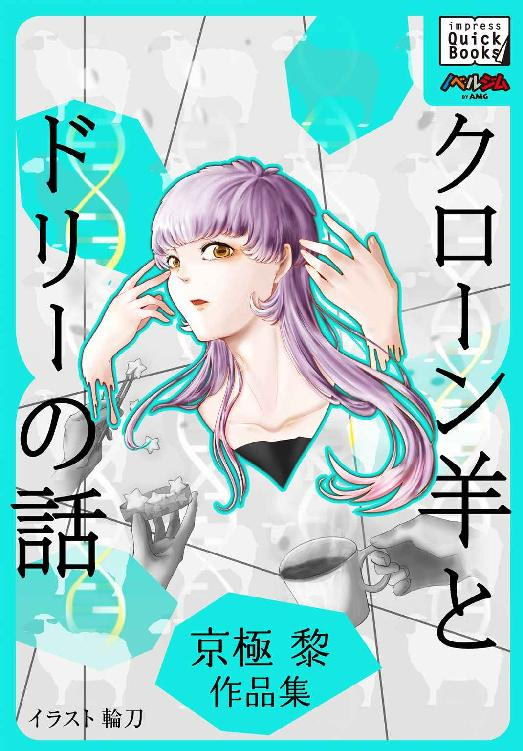

| チーム・ニコラウスより愛をこめて 柿ノ木コジロー作品集 impress QuickBooks | |
| 柿ノ木 コジロー | |
| (2014) | |
チーム・ニコラウスより愛をこめて
０ 出発
僕らが暮らすシェアハウスの庭。木々も噴水も雪に覆われている。敷地の外には、針葉樹の森が広がっている。
白一色の庭に佇み、僕は今一度、煌々と明かりのついたテラスを見やった。
僕らは今から出かけるのだ。クリスマスの旅に。年に一度の大仕事のために。
前日までの僕の憂鬱は既に消えている。
今は、もうやることをやるだけ、という純然な使命感が胸に満ちていた。
「立ち位置準備完了です、ニコラウス」
ルディーの声で我に返ると、背後にはすでにソリが、そして『チーム・ニコラウス』の精霊たち四名が所定の位置に待機していた。
先頭にはリーダーのルディー。いつものとりすました感じはなく、緊張した面持ちだ。
続いてブリッツェンとコメットの女性陣、しんがりにはダッシャー。
黒いトレンチコートに身を包んだ彼らは、手に古びた綱を持って僕の方をじっと見守っている。居並ぶ彼らの立ち姿は凛として、控えめに言ってもかなりサマになっている。
彼らの手から伸びた綱は、後ろの古びた木のソリに繋がっている。大きくて頑丈な作りだが、かなりのおんぼろソリだ。
「いってらっしゃい」
テラス前に出て見送るのは、今年はバックヤードに残るメンバーのひとり、精霊のキューピッド。
蜂蜜色の金髪をふわりとシニヨンにまとめ、ゆったりとした白いドレスの彼女は、優しい笑みを浮かべて僕に紙袋を手渡した。
「ニコラウス、よい旅を。途中で軽く食べられるように、サンドイッチを作りましたわ。今回はかなりスケジュールが込んでるのでしょう？」
「ありがとう」僕は家の方を見やってからもう一人の居残りの精霊について尋ねる。
「ドゥンダーはどうした？」
少し困ったようにキューピッドが笑う。
「モニタの調子が心配だからお見送りできない、って。ごめんなさい」
「謝らないで、気にしていないから」
彼女にそう声をかけ、僕はソリに歩み寄った。
今の僕は、どこにでもいそうなただの青年だ。少しばかりやせ気味で、髪と目は砂色、黒い革ジャンにジーンズというラフなスタイル。
しかし、一年のうち、今日だけは――十二月二十四日だけは違う。
「では行こうか」
先頭に立つリーダー、金髪をクルーカットに仕立てたルディーに僕は声をかけた。
ルディーが右手を真直ぐ天に上げ、ひと声高らかに宣言する。
「神よ、われらを祝福し給え」
周りに白い光が満ちた。時空は歪み、世界は足並みをそろえて夜に沈む。
みるみるうちに僕らは姿を変えていく。
トレンチコートを着た精霊の一群は、ベルベットのようなつやの毛皮に包まれ、荘厳で巨大なトナカイと化した。彼らをつなぐ馬具もまぶしいくらいに豪華で、その綱が白銀色に輝くソリへと続いている。
そして僕も、普段の華奢な外観からみるみるうちに恰幅のよい大男へと変身、白い髪とひげがふさふさと生え、シルクの真っ赤な衣装とすべすべのマント、白い房飾りに取り囲まれた。
手にはしなやかな黒革の鞭。トナカイをぶっ叩いたことは一度もない。世間が抱いている僕のイメージを崩さないために持っているだけなんだ。
ああ、誰が何と言おうと、僕はやはりこの姿が大好きだ。飾り物の鞭まで含めて。
「ＨＯ―ＨＯ―ＨＯ―!!」
声高らかに、僕はチーム・ニコラウスの出立を宣言し、ひらりとソリに飛び乗った。
手綱を握るやいなや、ソリは煌めく一筋の矢となって天へと駆け昇っていく。
僕らのシェアハウスは、すでに遥か下界だ。ぽつりとみえる金の光のもと、手を振るキューピッドが見えたような気がした。
クリスマスの旅は始まった。
まずはまっすぐに極東を目指す。
ああ、旅立ちの前まで、何が憂鬱だったのか、って？
それでは秋のあの日にさかのぼろう、一緒に。
１ 憂鬱な季節が来た
はあ、と僕は今シーズン初めてのため息をついた。
広葉樹と石の彫像とがバランスよく配置され、小公園とも言えそうな庭園には厚く落ち葉が散り敷かれて、持っているホウキがすぐに重くなる。まるで僕の気持ちのように。
「とうとう、この時期が来てしまったか」
赤い葉が、僕の見守る中ひらひらと不思議な曲線を描いて落ちていく。
いつもそうだ。落ち葉を見るたびに憂鬱になる。特に赤い葉っぱ。
ホウキを動かす僕の背中は、たぶん丸まっていたのだろう。
「ヘイ、ニコラウス」
ふり向くと、そこに立っていた彼女は――精霊のコメットだった。
つやのある黒い革のロングコート、その下はいつものように薄いベージュのワンピース一枚。長い栗色の髪が豊かに波打って、白磁みたいに肌理(きめ)の細かい顔を取り巻いている。
「また、しょんぼりして暗いため息ついて。窓から見えたわよ。いい男が台無し」
彼女はエメラルドのような深い色をたたえた瞳を見開いて、僕を見つめていた。
「今年もまた、大勢の人たちがあなたを待ってるのよ。世界中の子どもや大人がね。もっと楽しそうにしていないと。こんなに人気がある男、ほかにいないわ」
「そんな役目、スパイダーマンやバットマンにでもくれてやる」
「ねえ」
「ジェイムズ・ボンドにでもイーサン・ハントにでも」
「ねえ、ニコラウス」
「僕はもうここから出て行く。どこか極東にでもひっそり住むんだ。中国とか、日本とか」
「ニッキー！」
「その名前で呼ぶな！ 僕にはニコラウスっていうちゃんとした名前が――」
僕が言い切る前に、コメットは僕の顔にそっと手を伸ばし、彼女の顔に引き寄せる。
「可哀そうなニコラウス、痩せっぽちさん。なのにあの日には、うんと着ぶくれて白いひげまでつけて、みんなの期待に応えなくちゃならない......ナーバスになるのもわかる。あなたはあまりにも有名で、あまりにも良い人だから」
僕は少しだけ、彼女の肩に頭を預けた。
「......ごめん、何だか変だよな。もう千五百年以上は生きているはずなのに、いつまでたっても大人になりきれないんだ。心の中も見た目も十六歳かそこらみたいでさ」
「いいじゃない、笑うとホント可愛いわよ、あなた。変身した時のおじさまにもときめくけど、途方に暮れた少年みたいな今の姿もまたゾクゾクする。私はあなたが好きよ」
「世界各地で、いろんな奴にいろんな事を言われ放題でも？」
「知ってる」
「本当に知ってるのか？ 『邪教による文化侵略だ』とか『企業のプロパガンダだ』とか言われていることも？ そもそも実在するのかさえ疑われているし。『あわてんぼう』だなんて歌われているのなんかまだましなほうだ。何年も何年も繰り返し言われて......もう耐えられない」
「泣かないで」
「......別に泣いてない。涙は出てない」
「心の中の涙が見える」
「さすが精霊だ」
「私たちだって、ひどい言われようよ。『アイツらどうしてウマじゃないんだ』『いやシカだろ？』『苔食って寝てろよ』『ステーキにすると美味いぞ』......なんてね」
そのとき背後から、えへん、という軽い咳払いが聞こえてきた。
あわてて彼女から離れると、玄関ポーチに男が立っている。金髪のクルーカットで背は僕よりずっと高く、碧い目を鋭く光らせている。彼は、このシェアハウスに住む精霊たちのリーダー、ルディーだ。
「いや、失礼。ジャマするつもりは無かったのですが」
相変わらず気取っている。
僕はわざと意地悪な口調にした。
「赤鼻くん、何か用？」
十一月になったばかりだというのに、彼の鼻先はもう赤く染まっていた。
「あんまりな言い方ですな、ニコラウス。私だって好きで鼻が赤いわけではありません。確かに、私の鼻は寒さには弱いのですがね」
ルディーは、肩をすくめながら答える。
「人の身体的特徴をとやかく仰るとは......恰幅の良い寛大な御大らしくありませんね」
今の、貧相な姿をしている僕に対する当てつけだろう。
見た目では普段の僕は本当に貫録に欠ける。ひげすら生えない。映画館に行くと、チケット売り場でしょっちゅう学生と間違えられる。
「それよりも、コメット。もう打合せの時間ですよ。一緒に行きましょう」
ルディーが軽くあごで合図すると、コメットは手を伸ばしてするりとぼくの顔を撫で降ろし、「じゃあね」と笑ってから、ルディーと家の中に入っていった。
僕はそれを見送って、またため息をひとつ。
世間では、僕が彼に同情して、僕のランナーチーム『チーム・ニコラウス』のトップに据えたのだと噂している。彼の鼻が赤いのが夜道で明るく役に立つ、なんて。そんな冗談誰が思いついたんだ。歌が流行ってしまったおかげで、彼をリーダーに据えざるを得なくなったのが実の所。あんな鼻もちならないヤツよりも、ダッシャーの方が年長だし、ずっと落ちついているというのに。
と、窓を見やると、そのダッシャーが。目が合ってしまい、思わずホウキから僕の手が離れた。
「ニコラウス、すみません、びっくりさせて」
ダッシャーは慎み深くやや目を伏せて、そこに佇んでいた。
中世のモザイク画から抜け出てきたようなくっきりした顔立ち。黒い髪に黒い瞳、タートルネックのセーターまで黒い。感情を表に出すことがほとんどなく、動作も穏やかだ。今みたいに、気がついたら彼がそばに立っていた、ということがよくある。話し方もふつうに声を出しているはずなのに、ダッシャーには何故かいつも物静かなイメージがつきまとっている。
「コメットを見ませんでしたか？ 今から打合せが」
「い......今、ルディーと入っていったよ」
そうですか、とようやく目を上げると、言いにくそうに口を開いた。
「今回の打合せは、あなたも参加して頂けますか。誰を留守番係にするかという話になると思います。ソリは四頭立てなので、二人は外れないとなりません。」
「そうだな......いいけどさ、一つ弱ったことがあって」
「何でしょう」
「今回、アフリカ地域のリストが増えたと聞いているんだけど、会議の後でいいから地図で一緒に確認してくれないかな？」
僕たちは、日付変更線や地理的条件に左右されず、その夜には自由に世界各地を飛び回ることができる。僕たちが動き回る間、時間はその歩みを緩め、奇跡の訪れを待つ。
それでも、毎年何かと気を遣うのが、プレゼントリストやルートのチェックといった、この事前準備の諸々だった。
「もちろんです。東アフリカの件では私からもご相談がありますので」
ぱっとダッシャーは顔を上げた。すごく明るい笑顔。一瞬息が止まりそうになるほどあでやかで、頬に血が上るのを感じた僕は、彼に気づかれないようにさりげなく目を逸らした。
僕は熱くなった頬を、汚れを拭くふりをして手の甲でこする。
よけいに土ぼこりがついた感触があった。
ではあと十分くらいで始まりますから、とダッシャーは軽く礼をして階段を上っていった。
ダッシャーは今いるメンバーの中では一番の古株だし、いつも職務に忠実で僕の思いに真摯に応えてくれている。実際彼は頼りになるし、滅多には見せないけれど、なにより笑顔が素敵なんだ。
僕は少し心を落ちつけようと、バラ園の端にあるアラバスターの噴水まで行って、土がついた顔と手をごしごし洗った。
服の袖で顔を拭っていると、後ろでかさこそと枯れ草のこすれる音がする。バラの植え込みの陰に何かいる。行方不明になっている飼い猫のマリアだろうか。
茶トラの柄がちらっと目に入って「マリア、おいで」と僕は優しく片手で招く。
「どこ行ってたんだ？ ずっと捜してたんだよ。新しい缶詰を買ったんだけど今度は食べてくれよな。好き嫌いばっかりして、挙句の果てに家出かい？」
「どうしたのよォ、ニコラウス」
また窓から声がかかった。今度はブリッツェンだった。
打合せだと聞いて起きたばかりなのだろう、ショートボブの黒髪の中、ひと房だけ銀色になった前髪が天を向いているような乱れようだ、しかも下着姿。それも黒いキャミソールにスキャンティ。精霊たちは恥じらいというものがあまりないらしい。
「アンタが話しかけてんのってェ、マリアじゃなくない？」
寝ぼけまなこをこすりながら、ブリッツェンは言った。
ふり向いてよくよく見る。それは猫ではなく、ハンバーガーの茶色い紙袋だった。
中にゴミが入っているのだろう、まん丸く膨らんでいて、ちょうどマリアくらいの色形に、僕は見間違えてしまったのだ。
水で冷やしたばかりの顔が、再び熱くなった。
「......ハンバーガーを買ってきててゴミをその辺に投げておくの、ドゥンダーくらいだしィ」
ブリッツェンはそう言って、忌々しげに舌打ちをした。
「今年こそアイツがチームから外れて欲しいもんだわ、ったく」
いつも物言いがキツイ。僕は自分が叱られているような気分になって、つい身をすくめた。
ドゥンダーは、『チーム・ニコラウス』の中でも一番新しく入った精霊だ。活発で明るいちゃっかり者で、いつの間にかリーダーのルディーにとり入って、チームの中でもいいポジションをキープしていた。
ルディーがトップに立って以来、ドゥンダーは配達メンバーから外されたことがない。
ただ、日常の生活がだらしなく、ファストフードが大好きなので、庭にも家の中にもよく、ゴミを散らかしていることが多い。
何度注意されても「はあ」とそのヤグルマギクの青色をした瞳を宙に向けて、あどけない笑顔を浮かべて生返事を繰り返している。
見た目はきゃしゃな少年風で、短めの金髪がふわふわとタンポポのように頭をとりまいている。そんな外見なので、最初のうちは女子たちから可愛いがられていたが、少しずつアラが出始めている。それに、気のせいか腹も？
あと五十年もあのペースでビッグバーガーセットを食べ続ければ、きっといつかはトナカイではなくて豚に変身してしまうだろう。
僕はまたため息をひとつついて、その袋を拾い上げる。
ブリッツェンは「先行ってるからねェ」と言い残し、颯爽と家の中へと消えた。
２ 気重な会議をした
二階の南側、大きな掃き出しの窓から秋の景色が広がるその部屋には、すでにメンバー六名すべてが大きな円卓に集まっていた。
この精霊たちは、今は見目麗しき人間の姿をしているが、かつては別の生物や物体の魂だった者たちだ。そんな彼らも、チーム・ニコラウスの一員となってからは、由緒正しい『トナカイ名』を名乗り、毎年クリスマスに聖なるトナカイへと変身して僕の乗るソリを引いてくれる。
もっとも、六人中二人は人間の姿のまま、シェアハウスで留守番係をしなければならない。その留守番係を決めるのが、この会議の目的だ。
膝を組んでゆったりと座っていたコメットが「あら、ハンサムさんのご登場ね」と、艶やかな笑みを浮かべ、一番入り口に近い空席を指した。
僕は音をたてないようにそこに座り、メンバーを見渡す。
僕のすぐ左に座っているのが、気だるげなブリッツェン。さっきの下着は黒だったが、服を着ている今も黒ずくめの格好をしている。
その隣がダッシャー。チームの中の最年長者で、物静か。
ダッシャーの次、僕のほぼ正面に座るのがコメット。室内であっても相変わらず美しい。
その横には、リーダーで赤鼻のルディーが、ぴんと背を伸ばしている。
次はふわふわの金髪で淡い青色の目を輝かせ、あどけないような笑顔のドゥンダー。
最後、ぐるりと回って僕の右隣には、こちらも見とれるほど美しいキューピッド。蜂蜜色に輝く髪をきっちりと編み上げ、すらりとしたうなじを真っすぐ伸ばして座る姿は、精霊というよりさながら女神のようで、いったん見てしまうと目が離せなくなる。
うっとりとキューピッドを眺めていた僕を左隣のブリッツェンがつついた。僕は、あわてて座る。
「マリアが、帰ってきてたわよォ」
ブリッツェンは手元の資料に目を移してぼそりと言った。
「さっき見たらァ、寝床に戻ってた。アタシが呼んでも無視だったけど。......ったく、腹の立つ猫」
「そうか、とりあえず帰ってきてよかった」
「そうだね、アンタずいぶん心配してたみたいだしさァ」悪戯っぽい言い方だった。
バラ園でマリアと紙袋を見間違えた僕を思い出したのだろう、横顔が笑っていた。僕は知らん顔をしていたが、また頬が熱くなる。
猫のマリアは、このシェアハウスみんなのペットだ。
限りある命をすぐ間近で見守るのが切ないという理由で、僕は猫も含めて生き物を飼うのはあまり好きではない。しかし、マリアがなぜか他のメンバーに懐いてくれないせいで、気がつくと僕だけがマリアに献身的に尽くしている。
「それでは始めようか、諸君」
口を切ったのはリーダーのルディー。コメットの右隣に主人ふぜいでどっかと腰をおろしている。僕からみてちょうど正面に位置するふたりは、赤く色づいた木々をバックに、王と女王のごとく堂々と見えた。
僕の胸に少し痛みが刺す。
何なら、僕の役目もルディーに譲ってやりたいくらいだ。彼が指揮をとり、僕はその後ろでトナカイとなってソリを引く。
それがちょうど僕の器にふさわしい気がする。いつもくよくよ考えてしまう僕に。
それに、ちょっとだけ妄想してしまった。コメットの近く、御者に従い何も考えず、皆と息を合わせて聖夜を駆ける自分の姿を。......それはそれで十分魅力的だろう。
またブリッツェンにつつかれないうちに僕は頭をひと振りして、意識を手元の書類に集中させた。
「まず、諸君に報告がある」
出席者を見渡し、ルディーはテーブルの上で軽く指を組んだまま言った。
「今回、彼女が先に辞退を申し出た」
ルディーの目線の先、僕のすぐ右隣に座っていたキューピッドが顔を上げた。
「ごめんなさい。実は......」
何かを言いかけたキューピッドの言葉を、ドゥンダーが奪う。
「聞いたよ、キューピッド！ 子どもができたんだって？」
コメットとブリッツェンは事情を知らなかったらしく、きゃあっと華やいだ歓声をあげた。ダッシャーと僕もびっくりして彼女を見た。
キューピッドはとても幸せそうに笑っている。
「ごめんなさい、ニコラウス。あなたにまっ先に言うべきでしたのに」
「いいんだよ、そんなこと。それよりおめでとう」
「ねえねえ、パパは誰なのォ？」ブリッツェンの遠慮のない質問が飛ぶ。
「まさか、メンバーの誰かってことは......」コメットがおそるおそる訊ねると、キューピッドはゆるゆると首を横に振った。僕はいつの間にか詰めていた息をほおっと吐き出す。
「人間の方ですの」
「え、人間？ じゃあさじゃあさ、パン配達に来るヨハン？ あの胸板が素敵って言ってなかったっけェ？」
ブリッツェンの質問に、またも首を横に振るキューピッド。
「図書館司書の眼鏡の人？」
「違いますわ」キューピッドのくすくす笑いが女子に伝染している。
「そうだよコメット、アタシ知ってるけど、図書館のアイツは妻子持ちよォ」
「その話は」急に咳払いをまじえてルディーが口を挟む。「後でして頂けないか？」
「もしかして！」コメットはお構いなしに叫ぶ。
「モミノキ歯科クリニックのドクターじゃないの？ あのお医者さま、もしかしてキューピッドに気があるんじゃないかって噂したことあったわよね？」
一拍おいて、キューピッドがこくりとうなずいた。
「素敵じゃん！」ブリッツェンは興奮を抑えきれない。
他のメンバーからも、口々に驚きの声や冷やかし混じりながらも祝福の声が上がり、明るい部屋に飛び交った。
僕はキューピッドの肩に軽く腕を回しながらもまた少し胸の痛みを感じた。
僕には、彼女のような色恋沙汰は永遠に禁忌だからだ。
精霊には許されても、僕には神から一生の貞節が求められている。見た目も心も成長しないのは、そこが原因なのかも知れない。
「それじゃあ......今年の留守番係は、あと一人か」
ここでまた言わずもがなのことを口に出すドゥンダー。
ブリッツェンが打って変わって厳しい目つきに変わり、ぎろりと彼をにらんだ。
「アンタが降りればァ？ タンポポ頭の極楽トンボさん」
冗談とは思えない強い口調だ。黒みがかった藍色の瞳が、刺すようにドゥンダーを見つめる。
咳払いをして、ルディーが言う。
「キューピッドのように、自己申告でもいい。今回は降りるという者がいれば受け付ける」
彼の視線は、なぜかダッシャーに向けられた。
あんな流行り歌のおかげでうまいことリーダーの地位につけたに過ぎないのに、ルディーはいつの間にやら、自分こそリーダーの器にふさわしいと思いこんでしまったようだ。ダッシャーが何も反論せずに大人しいのをいいことに、彼に対してこのような態度をとることがよくある。ダッシャーはそんな挑戦的な視線をも忍耐強く受けとめ、静かに前を見つめている。
「年齢順に降りる、というのもありかな」
ドゥンダーのあけすけな言い方に、いつもは比較的穏やかなコメットですら、ぐいとあごを上げて彼を見すえた。
「年齢だけなら、ニコラウスが一番でしょうね。でも本気で言ってるの？」
コメットの口調には威圧的な強さがある。皆の視線が一斉に僕に集中し、ますます居心地の悪さを感じてしまった。
「彼は外せません。ニコラウスは精霊ではなくて聖人です。トナカイにはなれませんよね、もちろん」
そう言ってこちらを向いたルディーの目は、ちっとも笑っていなかった。
「ニコラウスってば――」キューピッドが思い出したようにくすくす笑う。「ブリッツェンから聞きましたけど、さっきバラ園で、紙袋をマリアだと思って話しかけていたのですって？」
彼女は、険悪になった雰囲気を和ませようと口を出したのだろう。でも、今そんな事を言わなくていいのに。悪気がないだけ逆にいたたまれない気持ちになる。
「それより、気になることがあるんだけどォ」
ブリッツェンのよく通る声に、今度はみな一斉に彼女を見た。
ドゥンダーに挑戦的な目線をくれたまま、ブリッツェンはタイトなジャケットのポケットから、スカイブルーのスマートフォンを取り出した。
「それ......」
ドゥンダーが口もとにまだ薄く笑みを張り付けたまま怪訝そうな表情で言った。
「僕のだ。あれ、どうして？」
「洗面台に置きっぱなしだったし」
ブリッツェンは取り返そうとするドゥンダーの手を軽く払いのけ、勝手にそれをいじり始めた。
「おい......何すんだよ」
「アンタ、ツイッターやってんだねェ」
「だから何だよ」
「パスワード設定もいい加減で、本体にロックもかけずに、ったく」
「だって、何だかよく分からないからさ」
ドゥンダーが更に手を伸ばし、ブリッツェンが避ける。
「アカウントみたけど、これはもしかして『機密漏洩』にあたるのかなァ？」
ドゥンダーの顔色がやや青ざめる。隣のルディーが小声で「どういうことなんだ、え？」と彼の肩を突いたが、それにも気づかないようだ。
「......何を書いていたの？」
コメットの声も冷たい。
ブリッツェンはさりげない口調のまま、指を動かして画面を出した。
「そうだね......こんなのがあるよ。『できちゃった婚？ 恋の天使ちゃん、ベビーのパパは誰？ クリスマスにはお留守番？』」
「そんなの、単なるつぶやきじゃん。誰もサンタクロース関係の情報だなんて思わない」ドゥンダーがうそぶく。「そうだろう、ルディー？」
ルディーはただ黙っていた。ブリッツェンはドゥンダーに構わずにまた別のツイートを探す。
「他にはねェ......『あわてんぼうのうちのボスは、メランコリックなときとのギャップがカワイイと女子たちに大人気。お相手はよりどりみどりなのに、親しくなってニッキーと呼ばれたとたん、いつもキレちゃってがっかりされるｗｗｗ』」
耐えきれず僕が声を上げようとした矢先、ドゥンダーが立ち上がり、ブリッツェンの手から乱暴にスマートフォンを取り上げた。
顔が真っ赤だ。
「なんだ......なんなんだよ！」
以前は年下の彼を可愛いがっていたコメットやキューピッドが、信じられない、と憤りの声を上げている。
ダッシャーですら、あきれたようにため息をついて言った。
「英国でのあの失敗で懲りたと思っていたのだが」
ダッシャーの言わんとすることは、僕もよく覚えていた。
それは、数年前に幼い英国王子の元にプレゼントを置きに行った時のことだ。部屋にすんなり入れたまでは良かったが、ドゥンダーはトナカイのままで、ついこうつぶやいてしまった。
「わあ、もっとすげーリッチかと思ったけど、あんがい普通っぽくない？？」
仕事中に言葉を発すること――それは、チーム・ニコラウスの精霊が冒してはならないタブーだった。
クリスマスの魔法が解け、見る見るうちに精霊たちは黒トレンチコート姿に、そして僕は痩せっぽちの革ジャン青年に戻る。
そして、時間が動き出した。
警報装置が鳴り響く中、僕らの元に大勢の警備員たちが駆けつける。こんな状況になってしまったら、不審者か暗殺集団と勘違いされないほうがおかしい。
「お前ら、いったい何者だ!?」「動くな!!」「王子をお護りしろ！」怒号が飛び交う。
あまりのことに僕たちはそのままの姿で逃げるのが精いっぱいだった。迷路のような宮殿内を文字通り命がけで逃げ回り、ようやく外に出られたと思ったら、そこには近衛兵たちがずらりとライフル銃を構えて並んでいた。
急いで呪文を唱える間に「撃て!!」の号令がかかり、僕らに向けられた銃が一斉に火を吹く。放たれた銃弾が僕の眉間に到達する寸前、魔法によって時が再び停止し、なんとか事なきを得たのだった。
「リーダーに、ドゥンダーの降板を要望します」
静かに、しかしきっぱりとダッシャーが言った。
「英国王室の件は、警備当局が問題をもみ消したのか、事件が明るみにならなかったことがせめてもの救いでした。しかし、ドゥンダーのこのつぶやきは、すでに世界中に発信されてしまったものであり、意図的な名誉毀損行為です。見逃すことはできません」
ダッシャーとルディーの視線が真っ向からぶつかり合う。
しばしの睨みあいの末、目をそらしたのはルディーの方だった。
「止むを得ない」
さりげなさを装っているが、心の中の葛藤が、寄せられた眉間にこもっている。
「しかし今年限りの措置だからな」
ルディーはそう言って、ブリッツェンの方を向いた。文句はないな、とでも言うように。
「タンポポ頭のドゥンダー君。アンタってさァ、ルディーによくよく気に入られてるのね」
ブリッツェンはうんざりした様子で肩をすくめた。
「今度そのオモチャを使ってアタシらのこととかつぶやいたらァ、あんたこのシェアハウスから追い出すよ？ ルディーとかニコラウスとかがどう言ったって、関係ないからね？」
吐き捨てるようなブリッツェンの言葉に、ドゥンダーは一瞬きっとなって口を開きかけた。しかし、結局何も言わず、それから先はずっと腕組みをしたまま沈黙していたのだった。
３ 複雑な思いをみた
会議も終わり、すでに夜中に近い頃。
白とミントグリーンのペンキで塗り分けられたキッチンで、僕は紅茶を、ブリッツェンはコーヒーをブラックで飲んでいた。
「よくそんなもん、飲めるねェ」
彼女は僕のカップを覗いてあきれたような顔をする。
「スリランカ産のウバなら香りも鮮やかだし、おいしいよ。少なくとも、スプーンが立つような、というより吸い込まれてしまいそうな濃いコーヒーよりはね」
「違う、砂糖入れ過ぎだって言ってんの。......ったく」
「砂糖じゃなくて木苺ジャムだよ。ロシア風に」
「スリランカだかロシアだか知らないけれど、ジャムにだって砂糖が入ってんでしょ？」
生活リズムが似ているのか、僕とブリッツェンはキッチンでこうして一緒にお茶をすることが多い。そしていつも、甘いの甘くないの、濃いの濃くないの、という話になる。
「ねェ、ニコラウス」
急にブリッツェンがカップを置いた。
「どうして会議でさァ、ほとんど何も言わなかったワケ？」
少し責めるような口調に、僕は静かに答える。
「あれは君たちの会議で、元々僕は傍観者だ」
「でもアンタを乗せて走るんだよォ、アタシら」
ブリッツェンのいつもの文句だ。
「どうしていつも、アタシらの会議に出ないの、それに『傍観者』ってどういうこと？ アンタだって言いたいことがあったら言やいいのにィ」
「特にない」
「嘘でしょ」
ブリッツェンは、美しい眉を寄せて真剣な目で僕を睨んだ。その目はどこか悲しげで、僕があまりにも統率力に欠ける点に、いら立ちを越えて哀れみを覚えているかのようだった。
「ルディーについてはどう思ってんのさ？ 本当にいつまでもリーダーをやらせておく気？ いけ好かない赤鼻野郎にさァ」
僕は肩をすくめる。
「世論には逆らえないからね」
「じゃあ、ツイッターで『ニッキーはもうサンタを降りたほうがいい』ってコメントが世界中にリツイートされまくったら、あなたはサンタをやめるわけ？」
「それもやむを得ない、時流だったら。ただ、僕をニッキーだなんてふざけたあだ名で呼ぶ奴には、二度とクリスマスプレゼントが届かないようにしてやる」
「ったく」
つぶやくようにそう言って、ブリッツェンはまたカップを口元に運ぶ。
「時々あなたがずっと年下なんじゃないか、って思う時があるわ」
またしばし、静かに時はすぎた。
何気なくキッチンの入り口を眺めていると、音もたてずに茶トラ猫のマリアが現れる。
だが急に、ギャッと恐怖の叫びを上げてまっすぐ飛び上がると、しっぽの毛を逆立てたまま走って逃げていった。
「すみません、マリア」
原因はダッシャーだった。すぐそばにやって来るまで、彼の気配は猫ですら察することができなかったらしい。
「ニコラウス、おくつろぎの所すみませんが、アフリカ支部からプレゼントのリクエストリストが届きました。今から時間は空いていますか？」
「とくに予定はないよ」
僕が短く答えると、ダッシャーは「では、先に会議室に行って暖房をつけておきます」と言って一礼し、去っていった。
カップに残っていた紅茶を飲み干してから、僕は重い腰を上げ、二階の会議室に向かった。
クリスマスの日、僕は世界中の家々を巡り、枕元やツリーの元に置かれたプレゼントに『聖なる光』を注入する。つまりおまじないをかけるというわけだ。そうすることで、次の日の朝になってプレゼントを開けた人に、特別な喜びがもたらされる。もっとも、僕の存在を信じる者にとっては、だけれども。
また、このやり方とは別に、絵本やアニメなんかで見られるように、僕らがプレゼントを配る場合もある。
「こちらが、アフリカの子どもたちから寄せられたリクエストのリストです」
薪ストーブがぱちぱちと音を立てる会議室で、ダッシャーが僕にぶ厚い書類を差し出した。
僕は、さっそくパラパラと目を通す。
「ハンバーガー、ハンバーガー、ハンバーガー......これはいったい......」
ダッシャーが壁に貼られた地図で説明した。
「ご存知の通り、東アフリカ一帯の飢餓で苦しむ地域に、この春から国際的な人道支援団体がいくつか拠点を設けて、子どもたちへの支援を始めました。小学校を整備したり、各国から図書を募って図書室を充実させたり......」
「ああ、聞いていたよ。アメリカのキリスト教関連の団体もかなり関与してくれてたようだね」
「ええ。その支援団体との交流の中で、現地の子供らの心を踊らせたのがクリスマス、それに、ハンバーガーという食べ物でした」
「......すごい世の中だね」
「全くです。同団体は熟慮の上、企業に相談して大量のバーガーセットを用意し、その子供らに配ることを決定しました」
「企業の宣伝活動っぽいよな」
「それでも、アフリカ支所の調査書では善意から出た要望となっています。配るとしますと、バーガーセットを我々が預かって配布していく形が良いかと思います」
「......今年限りならいいだろう。以前みたいに、北欧の架空団体名を使って協力を申し出よう」
「了解です、ニコラウス」
そんな調子で他の問題もいくつか片付けて、僕はいくぶんすっきりとした気分で会議室を辞した。
廊下の角を曲がった時、ルディーの部屋から誰かが飛び出してきたのがみえた。
ドゥンダーだ。
どうやら頭に血がのぼっているようで、心なしか、髪が逆立っている。
ドゥンダーは僕をみとめ、はっ、と狼狽した表情を浮かべた。しかし、すぐに「ニコラウス、おやすみなさい」と、取ってつけたような明るさをこめて、自分の部屋へと急ぎ足に戻って行った。
ルディーは、自分の部屋のドア脇に立っていた。
「あ、ニコラウス......」
あい変わらず鼻を赤くしているが、珍しく動揺した表情だった。
「ドゥンダーのスマートフォン、あなたのほうで預かっていただけますか」
ルディーは、スカイブルーの薄っぺらい機械を差し出した。僕は戸惑いつつも、それを受け取って胸ポケットに入れた。
彼はまだ何か言いたそうだった。僕は待つ。
「あの......」ためらいがちに、ルディーは再び口を開いた。
「実際、お聞きしたいのです。あなたが私のことをどう思っておられるのか......」
僕は静かにたずね返した。
「君の何に対して？」
「全てです。本当は、ご不満があるのでしょう？」
ルディーが目を上げる。まるで、僕を睨むような目だ。
僕は、なるべく精霊たちのいざこざには口を挟まないようにしている。たしかに、僕は精霊たちの主という立場だが、彼らのリーダーはルディーなんだ。
しかし、正直にぶつかってくる彼に、僕も今は正直に答えようと決めた。
「ああ、不満は感じている。ダッシャーに対する態度は感心しないな。それに、君はドゥンダーをかばい過ぎていると思うよ」
やはり僕の言葉は重いのだろう。ルディーは視線を落とした。黙って自らの足先を見つめている。
僕は、ルディーがドゥンダーを連れて来た時のことを思い返していた。
精霊になる前のドゥンダーはデンマークの森に棲む小さなオコジョだった。この小動物は、不幸にも、あろうことか聖なる夜に猟師の罠にかかったのだった。
もうろうとした意識の中でオコジョが天を見上げると、夜空を駆ける僕らがいた。それを見た彼は、血を吐きながら願いをつぶやいた。
（ああ、サンタさま。お腹が罠に挟まってひどく痛いんです。どうかこの罠を外してください。ああ、そして来春には、素敵な女の子と出逢えますように）
彼の肉体からふわりと魂が遊離し、淡い光を発した。今にも消えそうなその光に気づいたルディーは、急に地上へとソリの進路を変えると、その魂を大きな角で引き留めた。他のトナカイたちは物問いたげに僕をふり返ったが、僕はただうなずいて、先への道をうながした。
その年が明けると、そのオコジョの魂は、すっかり精霊としての姿を整えて皆の前に登場した。
すでにチームを引退しようとしていた先代のドゥンダーが、彼を温かく抱きとめて迎え入れる。
「君がワシの代わりをやってくれるのかね、ありがとう」
その歳多き精霊は、それまで『チーム・ニコラウス』の一員として長年僕を支え続けてくれていた。
僕とルディーは、ちっぽけなオコジョの精霊が後任のドゥンダーとして認められるか内心びくびくしていた。しかし、先代はただ優しい目でうなずいてみせただけだった。たぶん彼は、事情を察してくれたのだろう。
現在のドゥンダーには、オコジョだった頃の記憶はない。
精霊とは、肉体を失った魂が自立した存在だ。彼らは精霊になったあとも数百年ごとに転生を繰り返し、そのたびに以前の記憶のほとんどを失っていく。
そして、このシェアハウスに集う精霊たちは、ドゥンダーのようにクリスマスの奇跡を信じながら生を終えた者たちだった。
他の精霊たちも、大なり小なり、『現在』に生きている。
理由も深く考えないままに、なんとなく僕を慕って、日々の営みとはこういうものだとばかりにすっかり落ちついてここで暮らしている。そうして年に一度のイベントに全力を燃やすのだ。いつか訪れる引退の時まで。
「それでもね、ルディー」
僕はそっと付け足した。ルディーがゆっくり顔を上げる。
「君がリーダーであることは変わらない。僕はそう考えている。君に任せる」
ダッシャーに嫉妬する気持ちもわかる。ルディーにとって、彼はあまりにも完璧すぎるのだ。
ダッシャーは、どうしてルディーではなく自分がリーダーでいられるのか、その役割をどうして僕が認めているのか、強く確かな後ろだてを求めているのだ。
ルディーは、心の中で何かと戦っているようだった。碧い瞳が宙を迷う。
しかし、すぐに彼はきっ、となって言った。
「あなたは外せないんです。この意味が解りますか？」
人間であった時の強い『自我』が、そして激しい『感情』がその瞳の中に青く燃え盛っている。
精霊となってもなお、ルディーはせめぎ合う諸々の感情によって、嵐の中の帆船のように翻弄されているのだ。
僕がしばしば彼に感じるわずらわしさ、それは生の感情がそのまま、僕にぶつかってくる点なのかもしれない。
「あなたは、私たち全ての......私の」
僕に対する畏敬の念、拠り所としての信頼感、それら溢れそうな思いがこもった碧い瞳を一途に僕に向ける。
「もういい。十分解るから」
解り過ぎるほど解る。なぜなら、この僕――ニコラウスもかつては人間だったのだから。
僕はルディーの肩にそっと手を置いた。強張っていて、しかし、どこか脆く儚げな感触が伝わる。
「僕も悪かった。もう弱音は吐かないよ。たとえ庭ででも」
ルディーは僕を睨みつけたままだった。今は怒りでしか感情を示せないようだった。
「それにもうクリスマスがくる。愚痴を言っているヒマもなくなるしね」
あえて明るく言って、僕は部屋に戻った。
彼がずっとこちらを見つめているのを背中で感じながら。
４ 困難な仕事を終えて、なう
本番の日。
僕らのソリは世界を駆け巡る。動きを止めた時空に、緩やかな白銀(しろがね)の軌跡を描きながら。
想像してほしい。もしも天の高みから全てが見渡せるのならば、こんな光景が見えるはずだ。
日本の首都・トーキョー。マンションの一室にどこからか一条の光が差し込み、ぐっすりと眠る四歳の少年を照らす。彼の枕元には両親の用意した汽車と線路セット、一瞬白い輝きが贈り物を包みこむ。
『聖なる力』が注入されたのだ。
ベトナム・ホーチミンの街の片隅。路上で眠る九歳の少女にも、光が降り注ぐ。
「メリークリスマス！」と酔っ払いが面白半分に投げ与えた小さなソフトビニールの人形。少女の胸に抱かれた、そんなにわか仕立てのプレゼントも白い輝きに包まれた。
アメリカ・モンタナ州のとある牧場。一三歳の少年は既に大人びた寝顔で、枕元には小さな靴下。サンタは街にやってくる、こんな田舎には来るもんか、とずっと両親は言い続けていたが、それでも父がクリスマスの真夜中になると、こっそり銀貨を靴下にしのばせる。少年はコインを貯めて、いつか父に腕時計を贈ろうと思っている。その銀貨にもかすかな白い光が宿る。
僕らはすでに大半の任務を終え、遂に最終目的地のタンザニア国上空へソリを向けていた。
アジア地域の件数が多く、思ったより手間がかかってしまった。せっかく持参していたサンドイッチをに手をつける暇すらない。
人間界に流れる時間は僕らの活動中はほとんど止まっているから問題はない、しかし、僕らだって仕事が多ければそれだけ疲れは溜まる。トナカイたちも疲れが出てきたようで、僕はこまめに彼らに声をかけて励ましていた。そんな僕も、家に帰って迎えてくれるだろう、木苺ジャムたっぷりの紅茶がそろそろ恋しくなっていた。
いよいよ、ビッグバーガーの配布作業となった。巡る村々は三百あまりだ。
僕らは袋を担いで訪れた家々を訪ね、包みの一つひとつを子供らに配っていく。
そして、ようやく袋の中には最後の一個を残すのみ。
僕はソリを降りて、すっかりしぼんだ袋を背負い、村はずれの小さな家の前に歩み寄った。
「こちら本部」
耳につけた通信機からキューピッドの声が聴こえる。
「いよいよ最後ですね。残る対象者は、アンナ・マサヴェ、十歳」
この家の少女は両親を亡くし、現在は祖母と二人きりで暮らしている。
少女の信仰心は人一倍篤く、祖母に対してもいつも気遣いを忘れなかった。
僕は今年最後の贈り物にありったけの思いを込めて、袋から残り一つの包みを取り出す。
「え？」
手を突っ込んで気づいた、何か感触がおかしい。
ずいぶん柔らかいぞ。それに毛が......
出てきたものを見た。ハンバーガーの袋が長いしっぽを振った。
僕は思わず大声で叫ぶ。
「マリアーーーーーーーーーーっ!?」
トナカイたちも、通信機の向うのキューピッドも、メンバー全員が凍りついた。
いや、全員ではなかった。通信機の向こうから、キューピッドの困惑した声が聞こえる。
「ドゥンダー......あなた、何がそんなに可笑しいの？ ま、まさか、あなたの仕業なの？」
普段落ちついたダッシャーも焦ってヒヅメで地面を蹴りまくる。
何か言いたげにブリッツェンが毛ヅヤのよい首を左右に振り、僕に迫る。首を垂れるルディーを、コメットが頭を傾けてじっと見つめていた。
何か代わりになるものはないかと、慌てて見渡してみる。マリアがソリの座席の下から何か引っぱり出そうとしていた。そう、キューピッドが用意してくれた僕のサンドイッチ。オーソドックスなエッグサンドだが、味は折り紙つきだ。
「みんな、ここで待機していてくれ」
僕はアンナの家に駆けこんで、彼女の枕元にサンドイッチの紙袋を置き、『聖なる光』を注入した。
彼女はこれから、一生食べるものには困らないだろう。
通信機の向うでドゥンダーを激しく責めているキューピッドの声をあえて聞かないようにしながら、僕はトナカイたちの元に寄った。そしてルディーの鼻づらに手をかけ、厳かに命じる。
「ルディー、膝を折れ」
トナカイは頭を垂れ、前足を膝から折り曲げて地につけた。
サンタクロースから「膝を折れ」と命令されたトナカイは、その場ですぐ精霊の姿に戻らねばならない。それは聖夜が晴れの舞台となるトナカイたちにとっては最も恥ずべき、恐ろしい処遇だ。
英国王室での失敗の時ですら、こんな命令はしなかった。......まあ、あの時にはそんな余裕すらなかったのだが。
今回は明らかな妨害行為だ。ドゥンダーがこの場にいない以上、リーダーの監督責任は重い。
みるみるうちに魔法が解け、トレンチコートを着たクルーカット頭の男が、跪いたままの格好で目の前に現れた。
彼は地面を見ていた。ドゥンダーのしでかしたことはルディーにも想定外だったらしい。すっかり放心した様子だ。僕は黙って、彼の肩を抱えるようにソリの脇に乗せた。
シェアハウスへと帰る間、ルディーは一言も口をきかなかった。
マリアは普段は絶対に乗らない彼の膝になぜか乗り、しかも丸くなって眠っている。ルディーはずっと、その猫の背中を撫でていた。
精霊になる前のルディーはドイツ軍の兵士だった。
第一次世界大戦の西部戦線。頭上で弾丸が飛び交い、連合軍の砲撃が激しさを増す中で彼は塹壕に身を隠し、必死に応戦していた。
「......仔猫の声がしませんか？」
そう言うと、一人の新米兵士が彼の脇からふらりと立ち上がった。
轟音の中、猫の鳴き声なんて聴こえるはずもない。極限状態がもたらした幻聴だった。
その新兵は呆然と繰り返した。
「仔猫の声がしませんか？ ......ほら、やっぱり鳴いてる。......助けに行かなくちゃ」
「馬鹿、伏せろ！」
塹壕から出ようとした新兵を止めようととっさに立ち上がった彼の頭を、一発の銃弾がとらえた。彼は新兵を下敷きにして塹壕内に倒れた。
錯乱していた新兵の方は倒れた時の衝撃で我に返り、事なきを得た。
その場では一命を取りとめたものの、頭の怪我は致命的だった。病院へ搬送される途中、彼は涙を流しながらか細くつぶやいた。
「聖ニコラウス、いや、サンタクロースよ、どうか教えてください。クリスマスには、僕は戻れるのでしょうか。......僕の生還を、じっと祈ってくれているフィアンセの元へ」
それが、戦友をかばった兵士の最期の言葉になった。
僕は一部始終を見守った後、彼に優しく手を差し伸べた。自分の元へと迎え入れるために。
そうしてルディーとなった彼には、生前の記憶が残されている。だからこそ、死にゆく中で愛を願うオコジョを見たとき、かつての自分と重なり、放っておくことができなかったのだろう。
僕は、手綱を操りながら時おり彼の横顔を眺め、また前を向き、を繰り返していた。
もうすぐ僕らのシェアハウスに着く。ソリは極北に入った。
目の前には、幻想的なオーロラが広がっている。暗い空いっぱいに揺らめく七色の光のカーテンは、まるで僕たちの帰りを祝おうと踊っているみたいだ。
ふと思い出し、胸ポケットに突っ込んであったドゥンダーのスマートフォンを取り出す。
先日、とあることを思いついて、スマートフォンの操作方法をコメットに聞いてみたのだ。
僕はいったん手綱をルディーに任せ、目の前に広がる光のショーを撮影した。更に操作をする。文字をいくつか打ちこみ、そして、送信。自然に頬が緩む。
ルディーは、そんな僕を見て不審げな表情をしている。僕は、彼の手から手綱を再び取ると、わざと顔をしかめて言ってやった。
「何だね、赤鼻くん」
「いえ別に」
ルディーはまた目を伏せ気味に、猫を撫でるのだった。
そうして、僕らはシェアハウスに帰った。まだあたりは真っ暗だった。
庭でお出迎えのキューピッドとドゥンダーの前に、僕たちは滑るように降り立った。
ソリの上に立ち、僕はひと声高らかに宣言する。
「この世の全ての暗闇よ、朝を迎え入れよ」
全ての魔法が解けて時が動き出し、気づけば僕と六人の精霊たちも、普段の姿で白い雪化粧の庭に立っていた。
留守番をしていたドゥンダーが僕の目の前に進み出た。
目にはいつもの甘えたような感じはなかった。何かを思いつめた光があった。
「マリアを入れたのは僕です。ニコラウス、あなたが紙袋を猫と見間違えたという話を会議で聞いたことを思い出して、留守番になった腹いせでやったんです。ルディーは悪くありません」
白い息をいっぱい吐きながら、彼は泣きそうな声で言った。オコジョの頃の記憶はなくなっていても、ルディーへの忠誠心は染みついているらしい。
ドゥンダーは繰り返す。
「本当なんです。ルディーは何も......」
「分かってるよ」
僕は、胸ポケットからスマートフォンを出して彼に差し出した。
彼は受け取ろうとしない。
「もう必要ありません。それに、僕にはもうここにいる資格はない。出て行きます」
「私も出ていきます」
後ろからの声にふり返ると、やはり強い目をしたルディーがいた。
「この責任は私にもある。彼をチームに加えたのは私です」
「その通りだ。ルディーはリーダーから降ろす。これは、君たち精霊の主である僕の命令だ」
僕は、できるだけ声に威厳をこめて言った。なにしろ、貧相な身体とぼさぼさ頭に戻ってしまっているので、さっぱり貫禄がない。
それでも彼らはしん、と次の言葉を待った。
「しかし、チームにはちゃんと残るように。ドゥンダー、君もだ」
ルディーの肩から力が抜けたようだった。
僕はダッシャーに目をやった。
「ダッシャー、来年は君がリーダーをやってくれ」
「分かりました、ニコラウス」
相変わらず控えめな口調のダッシャー。
「あと十年という期限付きでよければ。その後はまたルディーにお願いしたいのですが」
「えっ」
「......実は」
ダッシャーは少し恥ずかしそうに付け足した。
「ハワイに土地を買ったんです、ええと、向こうの精霊とちょっと......知り合って」
あまりにモジモジしていて、気がついた。
「って、彼女？」
威厳を保とうとしていたなけなしの努力を忘れるほどに、僕は驚いて、すっかり素に戻っていた。
「はい、まあ......実はもう子どもが」
一同、あぜん。ルディーでさえ、口をあんぐりと開けたままにしている。
「まさかの、できちゃった婚......」僕も、完全に意表をつかれた。
でもまあいい。精霊だって恋をして結婚する権利はある。
「分かったよ」
えへん、と咳払いして、僕はルディーにも「いいね」と確認をとる。
元よりルディーに異存はないようだった。赤い鼻を更に赤らめて、ようやく「ありがとうございます」と答えた。
「ドゥンダーはどうすんのさァ？」
我に返ったらしいブリッツェンの声が響いた。
「ツイッターの件、どう落とし前つけんの？」
重大な任務が済んだばかりということもあるのか、言っている内容ほどには、険がない口調だ。
いい機会なので僕はさりげなくスマートフォンを取り出し、皆の前に画面を出す。
「今後、ドゥンダーにツイッターの利用を許可する。それにここに残るのも」
「ええ!?」
「これ以上好き勝手させんの？」
抗議の声が上がる。
「それはちょっと違う。ドゥンダーには、僕らの宣伝活動をしてほしいんだ」
僕はドゥンダーにまっすぐ向き直った。彼の淡い青紫色の眼が僕を見返す。誠意のこもった、真摯なまなざしだった。
「どういうことでしょうか？」
「無責任なことを書かない。でも、世界のみんなに夢を発信し続けて欲しいんだ」
「私がチェックしましょうか」
キューピッドが横から笑いながら言った。
「アタシもね。でも抜き打ちだから」
ブリッツェンがわざと怖い声でつけ加える。
「頼もしいな、二人とも。例えばこんなふうかな」
僕はさっき彼のスマートフォンから発信した写真つきのツイートを表示した。
「何これェ、さっき上空で見たオーロラ？ きれいに撮れてるねェ」
ブリッツェンがまずそれを取り上げ、画面を覗きこんで、それから何かに気づいたように、ははっと笑った。
「っていうか......これさァ、本当にニコラウスが？」
見せて見せて、と周りから手が出る。精霊たちは内容を回し見ては、吹き出している。
最後に僕のツイッターを見たドゥンダーなんて、泣いているんだか笑っているんだかわからないおかしな声を上げたものだから、僕たちはみんなでまた思いっきり笑った。
これで去年のクリスマスの話はお終い。ご静聴いただきありがとう。
皆さまにも、よいクリスマスを。イエスの御加護を。
そうそう、どうして、僕のツイートが精霊たちを笑わせたかって？
それは、僕のアカウント名が「ニッキー＠あわてんぼう」だったからなんだ。
あっぱんだお・ねんじぇるす
１ 都市をもらった
ぼくは天使。
性別はないけど、なんとなく自分は『ぼく』かな、って思っている。
友だちがひとり。名前は『悪魔』。
悪魔だけど、友だちにはちがいない。
理由はなぜだか分からないけれど。
この前ぼくは、日頃のごほうびに神様から新しい都市を一ついただいた。
ぼくはできたての都市を上空からうっとりと眺めていた。
「さあ、どんどん大きくおなり」
そこにやってきたのは、わが友悪魔くん。
「何見てんの」
ストレートの黒髪がかぶった、まっ白な顔をこちらに近づける。
黒い瞳がいたずらっぽくキラキラしているのが見えて、ぼくは真下の都市をかばうように腕を開く。
「ダメ！ 見せない」
「どうしてさ」
「だって悪魔くん......すぐこわしちゃうんだもん」
「ちぇ」
悪魔くんは、頭の後ろに手を組んで、ぼくに背中を向けた。
そうして立ち去りかけて、また、くるりとふり向いて言った。
「それさ......その都市」
「なに？」
ぼくはぎくりとして、都市をかばうようにさらに手を広げる。
悪魔くんは、歌うようにこう言った。
「スラム街がでーきてるぜぇ。お前がサ、急成長させ過ぎてー」
――がーん。
悪魔くんはぼくの心をズタズタにして楽しそうに去って行く。
でも、友だちにはちがいない。
理由はなぜだか分からないけれど。
２ どうしてもいじりたい
今日も悪魔くんがやってきた。
「やあ、悪魔くん」
都市に『初恋実るデートスポット』を創造していたぼくは、あわてて駆け寄る。
いたずらされないように、天使のおまじないをかけてから。
よく見ると悪魔くんたら、顔も手足も傷だらけ。
髪の毛もぼさぼさだし、黒い上下の服には、あちこち裂けていたり焼け焦げていたり。
「どうしちゃったの？」
「向こうの町で、エクソシストと戦ってきた」
「えくそしすと？」
「ようするに、悪魔払いをするおせっかいでやっかいな聖職者のことだな」
「勝った？」
「ああ。向こうがな」
「悪魔くん、負けちゃったんだ！」
「ちがう。あえて勝たせてやったんだ」
悪魔くんいわく、あまりにも強い魔力を使うと、人間はますます狡猾に、卑怯な手をつかってくるので、たまには「参りました」と、言ってやるのだそうだ。
「それよかオマエ、そこの町に行ってやれよ」
「えっ」
「ひとり死にそうだからよ」
「手を出しちゃったの？」
「もとからヤバかったんだよアレは。それよか、かなり求められてたぜ。『主の御使いは、まだでしょうか』ってさ」
......ぼくはしぶしぶ、でかける支度をする。
後ろで束ねていた金髪を解いてふわっと肩にかぶせ、白い服のすそについた糸ゴミを取り除く。
「じゃあ、行ってきます」
出がけにふり向くと、案の定、悪魔くんは、ぼくがもらった都市に手を伸ばしていた。
「見るだけ、だから」
ぼくと目が合うと、ちょっと決まり悪そうににやっと笑った。
......信用できない。
悪魔くんに教えてもらった町に着いた。
でも、いくら探しても、死にそうな人なんて一人も見つからなかった。
へとへとになって帰ってきて、あの都市の様子を覗いてみると――。
「やられた!!」
夜の都市に、歓楽街のネオン、そして、サラ金と新興宗教の看板がひしめいていた。
３ だてんしってなんだ？
悪魔くんは、堕天使とも呼ばれている。
その別名の意味を、悪魔くんは教えてくれない。
しつこく聞いたら、急にくるりとこちらを向いて
「キミはいい子だねえ」
そう言って、頭を撫でてくれた。
しばらく日本という国で活動しなさいと神様から言われた。
ぼくはすぐ日本語の辞書で「だてんし」を調べた。
―――だ・てんし
とあるので首をひねる。
『てんし』、は分かる。
でも、『だ』って何だ？
そこに、悪魔くんがやって来た。
「ねえ悪魔くん。『だ』って何？」
ぼくは辞書を見せて聞いてみた。
悪魔くんは、ふむふむとしばらく読んでから、「教えちゃる」と、自信たっぷりに答えた。
「『だ』っていうのはな、『おーる・おっけー・いず・べりー・ないす』ちゅう意味や」
急にオオサカという所で見たおっちゃんみたいな口ぶりになった。
「分かるやろ？」
「分かんない。英語的にも意味通じないし」
「しゃーないなあ」
いわく。日本語の名詞は、『だ』という文字がつくと、とたんにその物事にハクがつくのだそうだ。
「ハク？」
「価値ですよ、ヴァリューです」
きらりーん、と悪魔くんは、かけてもいない眼鏡の縁を上げるフリ。
「いいですか？ ダガッキ、といえば楽器の王。ダソク、といえば貴重な特典。ダシノモト、といえば死にゆくニンゲンに『人生は素晴らしかった』と味わわせてくれる魔法の旨味調味料。そして、ダガシといえばこれ」
悪魔くんは、懐から茶色い紙袋を出して中から飴をひとつ出した。
「いつ、どこでも貴方を潤すちょっとした食料なのです」
ぼくは、飴をもらって口にほおばりながら、もしかしたら今度もだまされているかもって少し思った。
けど許しておこう。ちょっとしたお菓子ももらったしね。
４ 涙の色はなにいろ？
「悪魔くーん、あーそーぼー！」
悪魔くんの家の前。声をかけたけど、返事がない。
なんだ、留守なのかー。そう思って僕は帰ろうと振り向いた。その時ちょうど、悪魔くんが、長くて細い抜き身の剣を引っ提げて、少し足を引きずるように帰ってきた。
むせかえるような血の匂い。
長いくろがねの刃（やいば）は真っ赤に染まり、ぽたりぽたりと地面に滴を落としている。
最初は服が黒いから気がつかなかったけど、悪魔くんの腕も体も、黒い靴先までもべっとりと血で汚れていた。
悪魔くんが、剣をひと振り。
ぶ厚くかぶっていた血がびしゃりと落ちた。
伏せている白い顔に鋼が薄青く反射して、点々と跳んだ赤い染みが浮かび上がる。
「......すごい」
他に言うべき言葉が見つからない。
「すごい？ 何が？」
目を伏せたまま不思議そうに尋ねる悪魔くん。
「赤い色が......すごい」
悪魔くんが、ふい、と顔を上げた。
その目は乾いていた。
「たくさんの命が、たくさんの命を互いに奪った」
何かを読み上げているような言い方だった。
悪魔くんは、怒っても笑ってもいなかった。
ただ、淡々としていた。
「正義の名のもとに。そしてどちらも、相手にオレの名前を冠して」
だから、手助けをしてやったのだ。どちらともに。
そう言って、剣を顔の前にかざした。
「そんなことが......あったんだね」
ぼくは否定も肯定もしなかった。
ただ、目から涙があふれた。
悪魔くんは、剣を真横に掲げたまま言った。
「それが涙ってやつか。水みたいなんだな」
うん、とうなずきながら、なおもぼくは泣く。
「しょっぱいよ」
「ふん。ヘンなの」
「悪魔くんだって、同じだと思うよ」
「オレは涙なんか出ない」
澄まして答えた悪魔くん。
「もし出るとしたらそれは、血の色をしているだろう」
そうなのかな。
ぼくはぼろぼろと、目からしょっぱい水を落としながら考えていた。
いつの間にか悪魔くんが、剣をぼくのあごの下に持って来て、その刃で涙を受けていた。
「悪魔くん......何してんの？」
「洗ってる」
悪魔くんは真面目な口調で答えた。
「エコだろ」
どこまで本気か、ちょっとよく分からない。
ただ、しばらくぼくたちは、そうして立っていた。
５ カモかも。
今日は悪魔くんがぼくの家に遊びに来ている。
「あ、どーぞこちらにお上がりくださいー」
玄関のほうで、妙に間の抜けた悪魔くんの声が聞こえてきた。
勝手に誰かを僕の家に上げているんだ！
悪魔くんは、後ろを振り返りつつ、少し腰をかがめながらこちらにやってきた。
「むさくるしいトコロですみませんねーホント」
むさくるしくて、悪かったですね。
悪魔くんの後ろから、おずおずとついて来たのは、一人の亡霊。
「おじゃま、します」
亡霊にしては、なかなか遠慮深い。
笑顔に見えなくもない口の曲げ方をして、不安げにあちこち見まわしている。
暖炉のそばのソファまで、亡霊を案内した悪魔くんは、「じゃ、お茶入れて来ますんデ」と、前髪の奥の目をキラキラさせて、もみ手をしながら台所へと消えた。
暖炉の中で火が燃える、かすかな響き。薪のはぜる音。
「あの......」
小さな声が、少し離れたぼくのところに届いた。
「ここ、どこですか」
「えっと......おたく、どちらさま？」
亡霊は、答えられなかった。
死ぬ前のことをまるっきり覚えていないようだ。
たまにそういうタイプの亡霊もいる。
ぼくは近づいて、そっとその亡霊に手をふれた。
どんどん流れてくる、そのこころ。
生前のこの人が、どんな人生を歩んだかが見えてくる。
元ニンゲン。男。ああ、なんてひどい。この男は生前、絶対的な権力者で、泣いて命乞いする弱い者たちをあっけなく切り殺し、懸命に抵抗する強い者たちをじわじわとなぶり殺したんだ。
「悪魔くんに、なんでついて来ちゃったんですか」
「なんででしょう」
亡霊は首をかしげた。
「......やさしかったから？」
そこに悪魔くんが、鮮やかなオレンジ色のマグカップを持って戻ってきた。
カップからは湯気がほわほわと立ち上っている。
「お待たせしましたぁ。あったかいお茶、お持ちしましたぁ。一気にどうぞ、はい！」
悪魔くんの掛け声とともに、亡霊はぐいとカップをかたむけて、一気にお茶を飲み干した。
すると、見る間に......その姿は震えながら縮みはじめた。
まるで空気の抜けていく風船だ。
しゅんしゅん、と勢いよく縮み、ついには悪魔くんの目の前で、一つの小さな黒いかたまりとなった。
かたまりが床に落ちるせつな、悪魔くんは、さっと左手を出してそれをつかみ取った。
床に落ちようとしていたオレンジ色のカップも、
「おおっとセーフ、お気に入りなんだこれ」
器用に右手ですくい取り、テーブルに慎重に乗せた。
「うまくできた。これはいいな」
縮んでかたまった幽霊を、両手で交互に転がす悪魔くん。
悪魔くんは時々、地上から連れてくる亡霊をこうして『固形燃料』に作りかえる。
そうして、暖炉の焚きつけに使っているんだ。
「おお、良く燃えるわ」
暖炉に放り込んだとたん、白く美しい炎がぼお、と立ち昇った。
ぼくらはそれに見入った。
悪魔くんによると、最後の最後まで邪悪だったニンゲンは、このように綺麗な炭になって激しく燃えるのだそうだ。
そういうニンゲンは実のところ、悪魔くんのことなんて愛していないらしい。
自分自身しか愛さないその頑なさが、強くかたい、良質の燃料になる資質なのだという。
燃え尽きる瞬間、亡霊の燃料は、まるで重い貨車が急ブレーキで止まるような物凄い悲鳴を発した。
「この音は、ダンマツマっていうんだ。美しい音楽だろ？」
炎の照り返しの中、悪魔くんの頬は紅潮していた。
６ 悪魔召喚
「ニンゲンたちがまた呼んでるな」と悪魔くんが言った。
「あーあ、魔法陣の描き方、また間違ってるね、悪魔くん」
「あの魔導書が間違ってんだ。早く改訂版買えって話だよ」
ぶつくさ言ってるが、目はらんらんと煌めいている。
「人気者は辛いなあ」
近頃ヒマなぼくの方をニヤニヤ見ながら、悪魔くんは楽しそうに出かけていった。
「お土産はドーナツがいいかな？ ぼうや」
「なんでもいいよ。いってらっしゃい」
ふてくされた言い方になってしまったけど、気にするもんか。
ぼくはテーブルに向かい合い、トランプでソリティアを始める。
いつものお茶の時間。
悪魔くん、なかなか帰ってこない。
ソリティアにも飽きたな。
それでもまだ帰ってこない。
何だか心配になるなあ。
暖炉の脇にある小さな鏡を覗く。
あ、地上が見えるぞ。
悪魔くんが、珍しく苦戦しているみたい。
......というか、ニンゲンにとっつかまってコテンパンにやられている真っ最中。
わあ、オリに閉じ込められてる。
しかも縛られてるし。ちょっと情けないない姿だよね。あ、電気あてられた。これはまずいかも。
......仕方ない。
ぼくは傍に立てかけておいた杖で床に『悪魔召喚＠これ第一優先義務ね』の魔法陣を描く。
そして、杖を振り上げて叫んだ。
「悪魔よ、来たれ！」
黒いもやが、魔法陣の中にたち込める。
急にあたりが暗くなり、空気がひやりと冷たくなった。
少しずつ、少しずつ黒い人影が現れ、そして――。
「ぷは～～～っっっ」
悪魔くんはばったりと、魔法陣の上に倒れ伏した。
「だいじょうぶだった？」
ぼくが駆け寄ると、悪魔くんは大儀そうに仰向けになる。
鼻血が出ているので、袖で拭いてやった。
「......遅えよ、呼ぶの」
だっていつも、『ひとりでだいじょうぶ、いちいち見んなよ、ミセモノじゃねえんだからよ』って言ってるのは悪魔くんの方でしょ？
......と、言ってやりたかったが、ぼくは黙っていた。
代わりに、コーヒーを入れてあげたら、悪魔くんはそのまま床で飲んだ。
「......アイツ、悪魔だ」
ようやく落ちついたらしく、そうつぶやいている。
「魔法陣以外は完璧だったな。悪魔崇拝を装いやがって姑息なヤツらめ、俺を罠にかけようなんて......ザコどものくせに。小童どもめ。危うく滅ぼされるところだった」
「ザコや小童に滅ぼされそうになった、ってちょっと哀しいよね。プライドが傷ついたの？ もしかして」
ぼくが意地悪な受け答えをすると、ちょっと傷ついたような目をしてこちらを見た。
「弱ってる時に、きっついよなオマエ」
「そうだ、悪魔くん。お土産は？」
あっ、て顔してる悪魔くん。ちょっと楽しみにしてたのに、忘れるなんて！
でもすぐに、真顔に戻ってこう言った。
「それよかさ、オマエの魔法陣も、描き方間違ってっぞ」
どうしても魔法陣にはこだわる悪魔くんだった。
７ あんだーざれいんぼー
遠くの山の端（は）に、うっすらと虹がかかった。
「あの虹のふもとに行こう」
ぼくは飛び出した。
悪魔くんも追いかけてくる。
「待てよ、なんでふもとなワケ？」
羽ばたきながら、ぼくはこたえる。
「いつも見てみたいと思ってたんだ、虹がどこから始まって、どこで終わっているのか」
「......知らねえぞ、オレは」
悪魔くんが、飛びながらそうつぶやいた。
虹に近づくにつれて、色合いはだんだんと薄くうすく、それは大気に溶け込んで、しまいには何も見えなくなった。
「あれ......」
きょろきょろと、七色の橋を探す。
悪魔くんは腕を組んでそっぽを向いている。
ふと下界を見下ろすと、そこでは三万人が死んでいた。
「あれは――」
悪魔くんが言った。
「――滅びの地だ。ちょっとしたいさかいがあった」
ぼくが何か言おうとしたら、悪魔くんは珍しく慌ててつけ加えた。
「虹を出したのはオレじゃないからな。別に見せようと思ったワケじゃない。それにアイツらは、お互いに殺し合ったんだ」
「そうなの......」
悪魔くんに言われなくても、わかってるよ。
ぼくは泣いた。
涙は大粒の雨のごとく、きらめきながら地上へと降り注ぐ。
「ねえ悪魔くん」
ぼくが泣きながら指さす下界を、悪魔くんも仕方ないといったふうに見おろした。
「なんだよ、泣き虫ケムシ」
「見て」
ぼくの降らせた雨のもとに、新しい虹がかかっていた。鮮やかに。
８ ある風の強い日に
びゅん、と吹き飛ばされて、ぼくは落ちた――と後から聞いた。
目が覚めると、知らないおじいさんとおばあさん、それから可愛い女の子が一人。
「気がついたようじゃよ、ばあさん」おじいさんの穏やかな声が耳に届いた。
その声に応じて、そっと差し出されるおばあさんの手には、厚くて少し不格好な木のお椀。
「ほら、飲みなさいな」
そっと口に含む。甘く冷たい水。
ひんやりと唇から舌、そしてのどにすらりと落ちていく。
「急ぐんじゃないよ、ぼうや」
そうおばあさんが言ってくれたけど、ぼくは夢中で飲みほした。
「あわてなさんな。足りなきゃ、また井戸から汲んでくるからさ」
「きれいな人ね。どこから来たのか、覚えてないの？」
女の子が聞いた。
ぼくは首を横にふる。
「あなた、突然ここに倒れていたのよ、まるで天から落ちてきたみたいに。お名前は？」
それも分からない。
辺りを見回すと、質素な差しかけ小屋みたいな家。
余分なものはなくて、きっちりと片付いている。
三人の服はぼろぼろで、つぎ当てだらけの洗いざらし。
それでも、どこかこざっぱりとした身なりだった。
「その子はもうだいじょうぶそうだで、わしらは畑に行って来るよ」
おじいさんとおばあさんは、鍬を持ってでかけていった。
「わたし、水を汲んでくる」
女の子の、いつもの仕事なんだろう。
ぼくもあわてて立ち上がる。
「てつだうよ」
女の子はにっこり笑った。
「口がきけるんだ、よかった」
それからぼくは灰色の服をもらって、彼らと一緒に暮らした。
ぼくは髪の毛がもしゃもしゃだったから、「鳥の巣さん」と呼ばれた。
朝は日の出と共に起きる。
夜は日が落ちて少ししたら眠る。
毎日少しずつ、
畑を耕し、
種を蒔き、
草を刈り、
鶏を育て、
牛の乳を搾り、
水を汲み、
作物をとり入れ、
簡素な食事に感謝の祈りを捧げた。
ある日。
家の脇に広がる森の端、いっとう大きな樹の根元に黒い人影が見えた。
「何してんだよ、オマエそんなところで」
懐かしい声。前髪をかきあげたその目は、優しく笑っていた。
「あ」
急に記憶がよみがえる。
「悪魔くん！」
駆け寄って、ぎゅむ、と抱きつく。
「なかなか帰ってこねえと思ったら、こんな所に住みつきやがって」
「どうしちゃったんだろ、ぼく」
「空から落ちたんじゃねえのか？ 風にでも飛ばされてさ」
「そう言われれば......そんな気もしてきた」
「もう一年も経ってるぜ、ノンキな奴だな」と、悪魔くんはため息をついた。
物かげから、おじいさんとおばあさん、そして女の子がこわごわと覗いていた。
「礼だ。こいつが世話になったな」
ちゃりーん。
悪魔くんが、おじいさんの足元に金貨を投げた。
金貨は地面を何度か跳ねたあと、おじいさんの靴にぶつかって止まった。
「待ってよ」
ぼくが声を発したのと、おじいさんが金貨に手を伸ばしたのは同時だった。
ぼくはいそいで駆け寄り、おじいさんより先に金貨を拾い上げる。
「神の祝福あれ」
金貨はほんのすこし輝きを変えた。
「どうぞ」
おじいさんとおばあさんは、改めてぼくが手渡したコインを不思議そうに見つめている。
「行ってしまうの？ 鳥の巣さん」
女の子は大きな目をかなしげにうるませて言った。
「あなたは、お空に帰っていくの？ 本当は、鳥の巣さんじゃなくて鳥さんだったの？」
ぼくは、しばらく女の子と見つめ合った。それから、翼の生えた鳥――じゃなくて天使の姿に変身して、何も告げずに、悪魔くんといっしょに地を蹴った。
ぐんぐんと冷たく甘い大気の中を飛びながら、ぼくは悪魔くんに聞いた。
「あの金貨、どうなるの」
悪魔くんは、寒くて霜がついてきた鼻の下をこすりながら、
「オレが投げてすぐにじいさんの足が触れちまったから、すんげえ増えてあのニンゲンたちの人生を狂わすかも......」
と言って、ぼくを見た。
それから仕方なさそうに付け足した。
「でもオマエが祝福しちゃったから、もしかしたらあまり増えずに、善く働くかも」
そんなことは神様にしか分かんねえよ、と、面倒くさそうに悪魔くんが締めくくった。
「それにしても、オマエ。下界に落ちて、ずっと記憶なかったのかよ」
「なかったよ、ぜんぜん。でも、あれはあれで幸せだったよ」
「幸せ、か......。オレもいっそのこと――」
悪魔くんは、前を見たままそう言いかけて止めた。
「何？ いっそのこと、何なの？」
「堕ちた時、全部忘れれば良かったよな」
そんなつぶやきをひとつ、白い息と一緒に吐き出した。
悪魔くんが『オチタ』時？ 僕は少し考えて、ああ、と気づく。
悪魔くんは堕天使、堕ちた天使だ。ずっと以前は天使だったのに、なぜか天から落とされてしまった。
「天使だった時のこと......忘れられないの？」
悪魔くんは答えない。ただまっすぐ前をみて飛んでいる。
ぼくらはずっとずっと藍色の空の中を飛んで、それぞれの家に帰っていった。
９ 「その日が来た」
とうとう、神様から言われた。
「悪魔を滅ぼしなさい。西の都市の首長に取り憑いて、大きな戦争を始める気です」
ぼくは、長い杖をずるずるとひきずりながら表に出た。
そして、西へ西へと飛んでいった。
「いざ、戦わん！ 神の名のもとに！」
西の都市の首長がそう叫ぶと、地を揺るがすような軍隊の雄たけびがあがり、地平を覆い尽くすように砂煙が立ち昇った。
周りの町を侵略するつもりだ。逆らう者は殺し、それ以外の者は奴隷にするんだろう。
目をこらして、さらに西。
煙る地平線の彼方に、傾きつつある太陽を見やる。
黄色くにじむ丸い光の中に、黒い影がぽつりと見えた。
悪魔くん――いや、恐ろしい顔をした悪魔だ。
うっすらと笑みを浮かべている。
ぼくは、息を大きくついてから、持っていた銀の杖を振り上げた。
「悪魔よ、たおれよ！ 地に伏せよ！ 永久（とわ）に滅すべし！」
ここしばらく出したことのない大音声。
激しく地面が揺れ、銀色の風が巻き起こる。
風は地上の木々や建物を薙ぎ払いながら、悪魔に襲いかかる。
しかし、悪魔も負けていない。
「くたばれ、この泣き虫野郎！」
その叫びと同時に、足下の地面が大きくひび割れた。
宙にいたにも関わらず、ぼくはよろめいて、つい下をのぞく。
割れた地面に、あまたの町、そして西の都市も飲み込まれていく。
真っ赤に煮えたぎる地下の煉獄から、業火がめらめらとぼくの真下にまで伸びてくる。
炎の影は悪魔の顔になってにたにたと笑ったかと思うと、大きな口を開けて炎の舌をぼく目がけて素早く伸ばした。目にも止まらぬ速さ、まるで鞭のようだ。
舌はぼくの足首にぐるぐると巻きつき、ぐい、とぼくを下に引っ張った。下に、地割れの更に下に見える真っ暗な闇に向かって。
もがいてももがいても、強大な力から逃れることができない。
長い裾に火が燃え移り、じわじわと足首の方から体が焦げていく。
――だめだ、このままじゃ炎に飲み込まれる！
ぼくは、引っ張られながらも渾身の力を込めて、杖を振りおろす。
「悪魔よ......滅びよ！」
まばゆい光が世界に満ちた。
しばらくして光が収まると、足にからみついた炎の舌は消えていた。
地割れはすっかりふさがり、ただ平らな地面が見える。
――悪魔は死に絶えたんだ。そして、地上の細かいもの、ささやかなもの、愛すべきすべてのものも。
どこまでもどこまでも、地平線のかなたまで、つるんとした大地。
もう何も残っていない。
ぼくは手に持った杖を頼りに、足をひきずるように東へ歩く。
いつかはやらねばならないこと。そう分かってはいたけど。
それがどうして、今でなければならなかったのか。
ぼくは涙をおとしながら、ひたすら歩を進める。
ずっと先に、何かが見えたような気がした。
近づくにつれ、それは黒い点となった。
さらに小さなカゴのように見え、それが網目のしっかりした籐のカゴとなり、そして何かが詰まった小さなバスケットになった。
近づいて覗きこむと、中には白い布に包まれた赤ちゃんが、ほっぺを薔薇色に染めて、むっちりした親指をしっかとしゃぶって気持ちよさそうに眠っていた。
黒い髪が、まっ白な額にふんわりとかかっている。
「わぁ」
そおっと、手を伸ばしてその髪に触れる。
絹のようななめらかさ、そして、白い肌のきめの細かさ。長いまつ毛。
「かわいい」
バスケットごと、ぼくはその子を胸にいだく。
そしてそのまま、東へと歩いていった。
悪魔くん、生まれ変わったんだね。
神様ありがとう。
人類には悪いけど、ぼくはやっぱり、うれしかったよ。
ふり向いたらぼくの涙のあとに、ぽつぽつと銀色のヘンテコな花が咲いていた。
10 世界は回る、ぐるりと一周
心にぽっかり空いた穴も、徐々にふさがりつつある。
赤ちゃんと過ごす日々。
おだやかで、やさしくて、あたたかい日々。
よく泣いて、よくミルクを飲んで、よく笑って、いっぱいうんちして。
なんだかすっかりパパみたいだなあ、ぼくも。
それでも楽しいんだからしかたない。
でもある日。
外から帰ってくると、見覚えのある顔が、寄りかかっていた暖炉から身を起こした。
「よお」
「悪魔......くん」
にこにこしている悪魔くんと、空っぽになったゆりかごを交互に見比べるぼく。
さぞかし、きょとんとしていたんだろうな。
「ひさしぶりだな！」
悪魔くんの広げた腕の中に、ぼくは飛び込んだ。
「ひさしぶり......って、どこがだよ!!」
「『悪魔に三日のヒマなし』ってよく言うだろ？」
「そんなことわざはないよ」
でもぼくはただ嬉しくて、悪魔くんの顔を撫でまわし、全身をよくよく観察する。
前と全然変わっていないや。
「どうして......どうして急に西の都市をあんなふうにしたの？ あんまりじゃないか！」
「まあまあ」
片手でぼくを押しとどめながら、悪魔くんはコーヒーでも飲むかなと台所に向かう。
すぐにカップを二つ持って戻ってきた。
向うのにはコーヒー、こっちにはただのお湯。
「乾杯だ」
かち、とかすかに陶器の触れあう音。
湯気がぼくたちの間に漂う、しばしの時間。
悪魔くんはカップを置いて指を組んだ。
「......次は逆だからな。次の戦いでは、天使であるオマエが滅びる」
分かってるよ。
そんなことは決まっていることなんだ。
「かなり、酷いことになるぞ」
それも覚悟はできている。
「それにオレは......赤ん坊なんて拾って帰らないからな」
そう言うと、悪魔くんはうつむいて自分の指先を見た。
「それでもいいよ。悪魔くんは、悪魔くんのやるべきことをしてくれれば」
「無力な赤子のままで、永遠にその場にとどまることになろうとも、か？」
「神が命じるのならば」
少し気づまりな沈黙に包まれる。
ぼくはカップを持ち上げて明るく言った。
「替わろうか」
「えっ」
悪魔くんが、本当にびっくりしたようにこちらを見た。
完全に素だ。
「もう悪魔がイヤになったんじゃないの？ いくら順番に滅びるって言ってもさ、何だかキミの方が、いつも哀しい顔をしてる。少しでもキミの心が軽くなるんだったら、楽しくなるんだったら、ぼくは――」
「つまんねえコト言うな。バカ」
強くさえぎられてしまった。
また下を向いた悪魔くん。
ずっと、ことばがない。
ぼくはようやく気がついた。悪魔くんたら――。
「涙が出てる」
悪魔くんのストレートな黒髪の下から、透き通った水滴がぽつりぽつりと、組んだままの手に落ちていた。
「やっぱり、涙、透明だったんだね」
「誰にも言うなよ」
「言わないよ」
だいぶたってから、悪魔くんが立ち上がった。
瞳はもう、乾いていた。
「やっぱり、見つけたら拾ってきてやる」
ぼくが生まれ変わったら、というさっきの話の続きらしい。
「少なくとも、オマエよりは子育てが上手なことを証明しちゃる。第一オマエ、ミルクがいつもぬる過ぎなんだよ」
ようやくいつもの口調に戻った。
そうしてそのまま、以前ぼくが神様からもらった都市の方角へ飛び立つ。
「ちょっと......またいじるの？ せっかく苦労して、サラ金看板だけは駆除したのに」
つい責め口調になりながらボクも後を追う。
悪魔くんは都市の中に突っ込んで行った。
止まったのは、ぼくのせいでできてしまったあのスラム街のところ。
「ホラ、聞こえるだろ？」
「え、何が？」
「しっ！ 静かに」
すべてが灰色がかって殺伐とした景色の向こう、むっとした空気の中から――。
「......聞こえてきた」
神を称える美しいゴスペルの歌声。
ぼくは、しばしその音楽に耳を傾けた。その脇で悪魔くんがつぶやく。
「オレはそんなに、好みじゃないけどな。でもオマエ好きだろう？ こんなヘンテコな......」
「素敵だよ」
心の底からふんわりと、温かいものが湧いてくる。ぼくは思わず悪魔くんに抱きついた。
「今までぜんぜん、気づかなかった。教えてくれてありがとう！」
そう言うぼくから、悪魔くんはぷいと顔をそむけた。
でも気づいたよ。少しだけ頬が赤くなってたね。
やっぱり友だちどうしなんだ、ぼくたち。
理由はなぜだか分からないけれど。
川岸の二人
がぼっ、と冷たい水を飲んだ。
細い指が後ろからしがみつく。
二人の子供が川で溺れている――偶然目にして、俺は川に飛び込んだのだった。水中でもがく華奢な腕と小さな顔。どちらも、小学校にあがったくらいだろうか。
一人は簡単に浮き上がったので、そのまま岸まで押すことができた。しかしもう一人は、川の真ん中で暴れていた。急いで助けに向かうが、川底がそこだけ急に深くなっていた。
俺は背負うようにして、その子の腕を引っ張った。凍るように冷たい水の中で、手足が動かなくなる前にと焦っていた。
細い腕が首に絡みついた。足は川底で滑り、体が頭から沈む。
子供は背中に張り付いて離れない。細い腕も体も固く強張っていて、依然として首を絞め続けている。
小さい尖った膝頭が背骨にあたった。
一度水を飲んだら、呼吸が飛んでしまった。
鼻からも、口からも、水はどんどん押し寄せる。
目の前が真っ赤になり、そして、真っ暗に。
俺は子供を背負ったまま、冷たい早春の川底へと沈んでいった。
＊
ねえ、と呼びかけられて俺は目を覚ました。
「おじさん」
目の前に、小柄な少年が立っている。長袖のトレーナーにジーンズの長ズボン、そして運動靴。
「起きてよ、おじさん」
胸や喉が痛い。頭もガンガンする。泥のような生臭さが鼻についていたが、俺はなんとか立ち上がった。
自分の体を確認する。服装はスーツのままだが、上着と靴は脱いでいた。だんだんと記憶がつながってくる。
近所を戸別訪問中だった。
怪しい訪問販売員、それが俺だ。
この地区を一日回ってカモは一軒のみ。お年寄りだった。何を買わせられようとしているのか、ほとんど理解していない優しい目だった。俺はその人のハンコをもらって、百万円の売上は確実となった。
それで十分、とりあえず今週は首がつながった。会社は来月も契約更新してくれるだろう。ブラックな会社でも居られるだけマシだ。
......それはともかく、この子供はどこから現れたんだ？
起き上がって気づいた。いつの間にか、川から上がっていたことに。
そうか、と改めて少年を見る。
営業から帰る途中、土手から向こう岸を眺めると、土手の張り出したところにくっつくように学校菜園が見えた。そこから出てきたのは二人の児童らしき少年。学校に戻るところのようだった。
特に気にも留めず通り過ぎた時、鋭い悲鳴と水音が耳に飛び込んで、俺はふり向いた。
激しい水しぶき。その子らが川に落ちたと気づき、すぐさま上着と靴を脱いで飛び込んだ。
一人助け、その後もう一人を......。何とか、助かったのか。
長く深く、安堵の吐息をつく。よかった、本当に。
しかし目に入った光景に、思わず凍りつく。
土手沿いの道路に救急車が、消防のレスキュー車が、パトカーが、そして大勢の人間が集まっている。車の回転灯が薄暗くなってきた早春の空を嫌な色に染めていた。不規則な点滅、照らされる黄色いライト、そして運ばれていく三つの担架。
その一つに乗せられた子供が、泣きじゃくりながら救急車に運ばれた。
あとの二つは、静かだった。
大きな体と小さな体が一つずつ。大きな身体から垂れさがっていた腕を隊員が手際よく担架の上に乗せた。その指にちかりと銀色の輪が光ってみえた。結婚指輪なんだな、そう思ってふと自分の手に目を落とす。同じ位置に銀色の指輪が光る。急に、運ばれていくあれが誰のものでもない、俺自身の体であることに気づいた。
呆然とした俺の後ろで、少年がぽつりと言った。
「ぼくたち、もう、死んじゃってるみたい」
翌朝も、俺と少年は土手にいた。
時間の感覚がおかしくなっている。一秒も、一分も、一時間も、一日も、経ってしまえば同じ長さだった。暇だとか退屈だという思いすら浮かばない。
「おじさん」
少年にまたおじさん呼ばわりをされ、俺はムッとして答えた。
「俺はまだ二十代だ。お兄さんと呼べ」
「おじさん、名前は？」
俺はあきらめて答える。
「カンザキだ」
「下の名前は？」
「コウスケ」
ふと、実家の母親がこの名前を呼ぶ声を思い出して胸が痛くなった。
（きっと、昨日は泣きながら呼んでいたんだろうな）
道端にしゃがみ込む。
妻のミナミには、まだシステムエンジニアをやっていると嘘をついていた。
前の会社をリストラされてから二年。俺は、誰も働きたがらないような会社を転々としていた。もうすぐ三十歳になるというのに。
着て行く服も、スーツが多くなったり、クツが擦り減ったりしているから、いつかはバレると思っていた。しかし、元々のんびり屋なせいか、ミナミは全く気づいていないようだった。
給与明細は自分で管理していた。ミナミは振込額で給料に触れていただけだった。ボーナス期には判明してしまうかとビクビクしていたが、これでもう心配する必要は無くなったわけだ。
どうしてこんな遠方の川でおぼれたのか、最初は不思議に思うだろうな。でももう何も説明はできない。
母親の涙にも参るが、ミナミを泣かせるのが辛い。
結婚して五年、子どももできずいつまでも新婚気分でいられた。でもそろそろ......ミナミの目がよくそんなシグナルを発していた。その度に、俺は家庭に縛られるような感覚が強まるのを恐れて、ずっと先延ばしにしていたのだ。
（......本当に俺、何も残さずに死んじまったんだな）
泣きたいのに涙すら出ない。そもそもこの体は、泣いたりできるのだろうか。
足もとをみると、体が微妙に道路から浮いている。周りにある物を掴もうとしても手からすり抜けてしまう。
これは肉体が無いからなのだろうか。意識だけが残ってしまったのだろうか。
「なあ少年」
「マキノ・アユム」
少年が顔を上げて答えた。
「なあアユム」
「なに？ コウスケさん」
年上の俺を下の名前で呼ぶのかよ、と俺は軽く毒づいた。
名札には、一年生と書いてある。年度がもうすぐ変わるので、じきに二年生になる――いや、なる予定だったのだろう。
それにしてもこのアユムという少年は落ちついている。あの時は必死に自分にしがみついていた癖に。もっとも、泣き喚かれるよりは気が楽だったが。
「俺、一度家に帰ろうかと思う」
へえ、と答えるアユムの目は冷めていた。
「それはね、できないみたい」
「え？」
何度目かの『小石掴み』に挑戦していた俺は、その手を止めてアユムに顔を向けた。
「ぼくも何度かやってみた。でも、ここからは動けないんだ」
アユムは鈍く光る水面に目を落とし、つぶやくようにそう言った。
いたずらに数日が経過した。といっても、俺にはやはり時間の感覚が無かった。
緩やかな風に乗って、小学校の方から桜の花びらが舞い落ちる中、ぼんやりとここ数日の出来事を思い返す。
事故直後は、警察や消防、市や学校の関係者がしばしば現場に立ち寄った。互いに眉をひそめて、あるいは無表情に、土手や川の中を身振り手振りで指しながら、状況確認をしたり、見解を話し合ったりしていた。
アユムが言った通り、俺たちが動けるのはほんの一〇メートルの範囲内だったが、すぐ近くまで来てもらえれば、彼らの話はよく聞くことができる。
そして不思議なことに、彼らの心の中までも聞くことができた。
最初はそれに気づかず、口に出ている言葉かと思っていたのだが、小学校教頭の「新人の事務員、ケツでけえよな」という声が聞こえた時に気がついたのだった。
「......ったく、どうしてこのタイミングで、そんなろくでもないことを思い出すんだ」
ぶつぶつ言いながら、俺は教頭に近づこうとしていたアユムの肩に手をかけて引き留めた。どうやら、俺とこの少年とは互いに接触できるらしい。アユムの小さな肩は手にすっぽり収まり、ほのかに温かく感じられた。一方、アユムが伸ばした腕は、教頭の体から突き抜けてしまった。
教頭にアユムの手の感覚が伝わった様子はなく、けろりとした顔で川向こうにある校舎に帰っていく。さっきの俺のぼやきも聞こえているふうがなかった。生きている人間に対しては、俺たちがどんな働きかけをしても素通りしてしまうらしい。
アユムはこのことを特に気にする風もなく、今度はしゃがみこんで草むしりのまねごとをはじめた。
「アユム。お前、そんなことをして何が楽しいんだ？」
呆れ気味に言うと、「コウスケさんだって、よく石をつかもうとしているよ。楽しいの？」と、同じような口調でアユムに言い返されてしまった。
俺はため息をついて、川岸をぼんやりと見渡した。
＊
その翌日、小さな花を持って年配の夫婦がやって来た。アユムは、自分の家のご近所さんだという。その人たちは、水を入れた牛乳瓶に淡い桃色のスイートピーを挿し、黙って手を合わせた。
その後に来たのは、アユムのおばと従兄弟だった。中学生くらいの従兄弟のほうがポケットからチョコレートの駄菓子を出して、そっと草の上に置いた。
「ねえお母さん、包み紙は取った方がいいのかな」
傍らで手を合わせていた母親が「そうね」というのに素直にうなずき、またかがみこんで包みを破り、中のチョコ菓子だけを草の上に戻した。
「キオ兄、こないだぼくのお菓子食べちゃったんだ」
アユムがその従兄弟――キオ兄の傍らに寄り添った。
「同じやつを二つ返してくれる、って言ったのにな」
アユムはその供え物を掴もうとしたが、やはり指はすり抜けてしまった。
葬式が済んで数日経ってから、俺の母と妻もようやくやってきた。
それまで来なかったのは、息子や夫が死んだばかりの現場に近づくのがつらかったためだろう、二人ともまともに見ていられないような表情だった。母親は泣き腫らした眼をしていたし、妻のミナミに至っては車からは出てきたものの、そのまま車の脇に張り付くように、立ち尽くしているだけだった。俺が近づくには、少しばかり距離が開き過ぎている。
ミナミは気丈にも唇を引き結んでいたが、うつろな目をしてぼおっと遠くをみている姿は哀れを催した。
そばに行きたい。
（ミナミ、俺はもう何も苦しくない。ただお前が笑ってくれないことだけが辛い）
そう言って肩を抱いてやりたい。
触れることができないのは重々承知だ。それでも傍に寄り添ってやりたい。
でも、いくらがんばっても俺は思いすら伝えられない。呆然としている妻、そして、涙を流す母親の悲しみを、俺はただ浴びせられるだけなのだ。......ならばいっそのこと、彼女たちには近づかないでくれたほうがありがたい。しかし――。
胸が引き裂かれそうだった。
アユムの方も同じ思いを抱いたのだろう。だんだんと、彼に花や供え物を手向ける人びとのそばには寄りつかなくなっていた。散歩ついでに興味本位で覗きにくる連中にも近寄らなくなった。彼らの心を覗いても、画一的な「かわいそうに」と「運が悪かったな」と「学校が悪い」という声しか聞こえてこなかったからだ。
そんなアユムが唯一反応するのが、事故現場すぐ向かいの家に住んでいるオバサンだった。
事故当日、最初に一一九に電話を入れて救急車を呼んでくれたのが彼女で、事故現場にも足しげく通ってくれていた。しかし、それはしんみりした事情からではなかった。
オバサンは、訪れる人たちが置いていった供え物を見ては「ちっ」と軽く舌打ちし、嫌そうにつまんで持参したビニール袋に押し込む。
「......ゴミ捨て場と一緒じゃないのさ、これじゃ」
オバサンのグチがたまらなく面白い、とアユムは『向かいのオバサンウォッチング』をしているのだった。「こんな所で二人も死なれちゃ、メイワクなんだよね」と吐き捨てた時には、大笑いをしていた。自分の死をそんなふうに言われてよく笑えるもんだ。俺は眉をひそめたが、ふとオバサンから零れ落ちた煌めきに眼をとめた。
セピア色の川の風景。コンクリート舗装の道が見えず、一面草に覆われていることから、今よりずっと昔のようだ。オバサンがここに住み始めた頃の光景らしい、のどかな川の姿が断片になって垣間見えた。
その映像は、すぐに日常の風景にかき消えた。にもかかわらず俺はそのセピア色に目を焼かれたようにたじろいだ。
きっとこの人にとって、ここは住処なのだ。オバサンはずっとこの場で、事故が起きた事実を背負って生きねばならないんだ。「メイワク」と言っていることばの裏には、悪意や無関心からではない、何か深い思いがあるのではないのだろうか。
俺は、オバサンが間に合わせの花瓶から腐った水を捨て、神経質そうに中を何度もゆすいでからまた元の位置に据え付ける様子を黙って見守っていた。
何日も何日も、通りすがりの人たちを観察して過ごした。
いつまでこうしていればよいのだろう。
俺は、がばっと立ちあがって、ぱんぱんと頬を両方の手で叩いてから、えいっと外に向かい走ってみた。「ミナミーーーー」と、妻の名を大声で叫びながら。
しかし、ほんの数メートルで急に足がずんと重くなり、そこから前には進めない。まるで粘度の高い泥沼にはまり込んでしまったようだった。
声も、近くを通りかかる人びとの耳には全く届いていないようだった。
何度やってみてもそんなことを繰り返しで、そのたびに、アユムだけがちょっとだけ上目遣いにこちらをみて、またどこかに目を戻すのだった。
＊
それからさらに月日が流れていった。
気がつくと、この状況にすっかり馴染んでいる自分がいた。俺は相変わらず川面を眺めていた。
隣のアユムも小学一年生の姿のまま、付近数メートルの範囲で何をするでもなく過ごしていた。向かいのオバサンウォッチングは続いていた。
当のオバサンは、胆石だか何かで入院したらしい。帰ってきた彼女の頭には、少し白髪が増えたようだった。
オバサンは、土手の牛乳瓶の掃除をまた始めてくれた。
さすがにもう、新しい花を持ってくる人間はいなかった。それでもオバサンは数日に一度は必ず、瓶をきれいにゆすいでまた元に戻した。自分の庭にも色々花はあるのに、一度もそこから摘んできたことはない。そこがまた彼女らしくて、俺はなんだか好きだった。
初夏のある日、かがみこんだオバサンのつむじを見ながら、俺はすぐ傍らにしゃがみこんだ。
すると、セピア色をした川辺の風景がまたみえた。
いつかと同じように、オバサンの思い出を拾い上げたようだ。
その景色の中で、若々しい男の声が響く。
「イツキ、どうだ？ 川沿いの一戸建てだぞ。新藤のじいさんが、息子家族と暮らすことにしたからって安く売ってくれたんだよ。オレ、バリバリ働いて借金返すからここで頑張ろうな、二人で」
見上げるような角度で、たくましい男の姿があった。
「まだ小っさい家で、ごめんな」
その視線が目の前の川に移る。滔々と流れている水は飴色の光にきらきらと輝いていた。
これからの暮らしに思いを馳せた、若い頃のオバサンの心象が映し出されているのだろうか。まだ張りのある、でも聞き覚えのある声が答える。
「一国一城の主だね、アンタも」
その言葉に脇の男がうんうんとうなずく。
「だよな」
「この川がまたいいよ。川はいつも流れて、毎日表情を変えていくからね。いつまでもここにいたいよ」
「だろ？ オマエは本当に川が好きだな」
男の腕が若いオバサンの腰に回ったその力強さ、温かさが彼女の周りを包んでいた。
俺は瓶の周りの草むしりをしている今の彼女を見おろしながら、ぼんやりとその記憶の温かさを感じていた。
オバサンの夫の今の姿を、俺もアユムも見かけたことがない。オバサンにとってこの川は、亡き夫と幸福に過ごした場所だからこそ、ここで死んでしまった俺たちのことを哀れに思っているのだろうか。
俺はオバサンにそっと顔を寄せて囁いた。
「いつも、ありがとう」
びくっと彼女の肩が揺れた。
「なんか、風がぬるくていやだねえ。雨かしらん」
オバサンはブツクサつぶやきながら帰っていった。
オバサンが家に入ったことを見届けると、アユムが久しぶりに話しかけてきた。
「ねえコウスケさん、気づいてる？」
「何に？」
「僕たちさ――」アユムは自分の両手を前にかざし、いつもの淡々とした口調で言った。
「――僕たち、薄くなってきてるよね」
はっとして俺はアユムに向き直った。アユムの向こう側に、いつもより黒々と柳の木が枝を揺らしているのがみえた。そのさらに向こうの川面には、ぽつり、ぽつりと雨の輪が現れては消え、それがだんだんと重なっていった。
何かがきっかけで、薄まり始めたのだろうか。それとも、ここに「在る」ようになってから徐々に薄まり続けていたのだろうか。
哀しくは無かったが、何かもう少し、できることはなかったのかという焦りの気持ちが、小さなの棘のように俺の心にひっかかった。
それからは、日々薄まっていくのが自分でも分かった。
俺は、ぱんぱんと両頬を叩いては「よし今度こそ本気」と喝を入れて、また走り出してみたり、飛び上がってみたり、ミナミの名を叫んでみたりした。
しかし、どれも空しい努力だった。俺は地団駄を踏む。その地団駄さえ、小石ひとつ動かさない。奥歯をぎりぎりと噛み合わせる。
「死んだら......死んじまったら何もできないのかよ！」
そしてまた、声を限りに叫ぶ。
「ミーナアァァ、ミイィィィィ！」
アユムは聞いているのかいないのか、何も言わずにいつも草を掴むフリをしたり川を見渡していたり、淡々とその場で時を過ごしていた。
そして更に時が過ぎていった。
オバサンはすっかりオバアサンになってしまった。もっとも、オバアサンになっても俺たちの間ではオバサンはオバサンだったが。
老いたオバサンは外出もままならないようで、時々デイサービスの車が迎えに来ては、車椅子の彼女を運んでいた。オバサンは外に出るたびに、こちらにちらっと目を走らせ、それでも黙って介助員の操る車いすに体を預けていた。
ある日、デイサービスの車に乗り込む直前、女性介助員がふとオバサンの乗る車椅子にかがみこんだ。何か話をしているようだった。しばらくその姿勢でいたと思ったら、なぜか、車椅子を押して細い車道を渡り、俺たちの佇む土手沿いにやってきた。
「このへんですか？ タチバナさん」
介助員は優しいけれども、どこか急かすような口調で車椅子の老女に問いかける。俺たちがオバサンを間近で見るのはずいぶん久しぶりだった。彼女の目は、途方にくれたようにあたりを見回している。ようやく、深く茂った草の陰に目当てのものを見つけたらしく、震える手で指さした。
「あれを......」
秋の風が鳴るよりもかすかな響きに、俺もつい近寄って耳をそばだてた。
介助員の女性はオバサンに何度も訊き直してから、草むらに屈んだ。そうして、立ち上がった彼女が拾い上げて車椅子に向けて見せたものは、あの牛乳瓶だった。乾いてこびりついた緑色の苔は、最後にオバサンが掃除してくれた時から過ぎ去った月日の長さを物語っていた。
「これですか？ 捨てるんですか？」
車椅子の上で、どこも見ていない眼でオバアサンは囁いた。
「もう......アタシは世話できないからね。帰ってこられないかもしれないし」
「なーに仰ってるんですか、夕方にはまた帰ってくるでしょ？」
介助員はからからと笑ってまた車椅子を押していった。
「今日はお団子作りしますよ、みんなで」
声が遠くなっていく。
夕方になっても、オバサンは帰ってこなかった。そして、それからずっと。
最後の去り際も彼女らしくて好きだな、と俺は少しだけ思った。
アユムの体はさらに透けてほとんど見えなくなっていた。そして、俺の体も。
触れれば感触はあるのだろう。しかし、確かめようという気は起こらなかった。
存在が希薄になればなるほど、活力も失われていく。
希薄になっていくのが怖い、という気持ちすら薄れてきているような感じだった。
すでに俺たちの間にはほとんど会話もなくなっていた。
＊
その日も、ただ日が暮れるのを眺めていた。
いつもと違ったのは、土手の脇、少し空き地になった所に黒い軽自動車が停まったことだった。
運転席から女性が降りてきた。すぐに誰だか分かった。
ミナミが来てくれたのだ。
俺の妻は、以前来てくれた日からほとんど変わらないように見えた。ただ、少し痩せたのか？ いや、皺が増えた？ そうでもないかな。髪を染めたのか。茶髪は似合わないな。
以前ここで見た時のようなうつろな表情ではなかった。ミナミの目は俺と暮らしていた時と同じように、瞳に映る一つひとつのものをじっと見据えるような力強さに満ちていた。
不思議なことに気づいた。ミナミを見つめていたら、心の奥底で何かが湧きあがってきたのだ。
これは......すっかり薄まって消えようとしていた感情が戻ってきたのか？
俺がまじまじとミナミを見ていると、彼女が乗ってきた車の助手席のドアが開いた。
降りてきたのは、若い男だ。死んだ俺が嫉妬してどうなるわけでもないが、ミナミはどうしてこの場に男と一緒に？ そう思った時に、隣ではっと息をのむ音が聞こえた。
「タケちゃんだ」
アユムが珍しく動揺して答えた。
「シキシマタケハルくんだよ。ほら、僕と一緒に川に落ちた子」
あっ、と叫んで俺はもう一度よく彼を見る。
しかし元より分かるわけがない。なにしろ、助けた時は川の中だったし、もう何年も昔のことで顔つきも変わっているのだから。
立派な青年となったタケハルに、ミナミが話しかける。
「......大学は結局、国立にするんだね」
「はい、とりあえず四年間はみっちり勉強しようかなと......高校でだらけてしまったし」
はははとタケハルは明るく笑った。その目はひたむきに川面に向けられていた。
「高卒でも隊員にはなれるんでしょ？ まだ勉強するのね」
「救命救急士の資格を取りたいんです。でも、もっと色んなことを学びたくなって......専門学校でも資格だけならば取れるんですが、アユムの母さんに言われたことがあって」
タケハルがそう言った瞬間、俺は久しぶりに他人の記憶をとらえた。四十代くらいの優しい笑顔の女性が見える。おそらくアユムの母親だ。隣のアユムも同じものを見たらしく、ごくりと唾を呑んだ音がした。
――タケちゃん。専門学校に行って早く水難救助隊に入りたいって気持ちは、あの子の母親として、とっても嬉しい。でも、いつまでもうちのアユムに負い目を抱いたりしないで。タケちゃん若いんだし、もっともっと色んなものを見たり聞いたりした方がいいよ。大学に行って、よく考えてごらん。
細かな言い回し、抑揚、息つぎまで、タケハルは記憶していた。よほどアユムの母親の事を気にかけているようだった。
――アユムだってきっと、大学に行ってって思っているわ。天国から、タケちゃんの受験も応援しているはずよ。
タケハルの肩に優しくかけられたその手の感触まで、俺に、そしてアユムにも伝わってきた気がした。
「おかあさん......」
アユムが耐えかねたように大きく吐息をもらす。
対岸を駆け抜ける小学生たちを見ながら、タケハルは言った。
「あのとき、アユムと俺は菜園から帰るところでした。俺は、靴が泥だらけだから川辺に入ってきれいにしようって誘ったんです。あいつは乗り気じゃありませんでした。俺が川岸の柵を越えた時も『駄目だよ、怒られるよ』って何度も言って、それでもついて来たんです」
タケハルは考えながら、次の言葉をさがしている。この話を人にするのは、初めてのようだった。
「雨上がりだったんです。靴を地面の草にこすりつけて拭いていたら、俺は滑ってしまって、岸の坂を転げ落ちて......そのとき、俺のパーカーのフードをアユムが掴んだんです、とっさに。『タケちゃんあぶない！』って言って。でも、二人とも川に落ちてしまって......」
「そういう事もあるのよ」
少し間をおいてから、ミナミが答える。
「......でも、俺のせいで、神埼さんのダンナさんまで」
「誰のせいでもない、そういう事もある、それだけ」
「でも」
「ねえ、タケハルくん」ミナミの笑顔が、夕焼けの色に染まっていた。
「私も最初は、どうして......何でうちのダンナが？ って、ずっとそう思ってたわ。アナタやアユムくんを恨んだりもした。でもね、誰が悪いことをしたわけでもない。タケハルくんが靴をきれいにしてから帰りたかったのは、お母さんに洗ってもらうのが申し訳ないと思ったからなんでしょ？ 誰もがみな、そこですべきことをしようと努力して、その結果たまたま悪い方に転がっただけなのよ。恨んでも後悔しても、何もいい方には進まないよね。じゃあどうすればいいか。私もこの歳になってようやく分かった。つまり、あの人があの日何をなそうとしたか、その思いをちゃんと受け止めて、次の人に繋いでいきたいって思うのよ。もちろん、タケハルくんの将来はタケハルくんが決めるものだけど、アナタが救助のお仕事を目指しているって話を聞いて、どうしても伝えたかったの」
「......そうなんですか」
タケハルもようやく、明るい顔になった。
「今日こうして誘って頂いて......本当に嬉しいです」
「それにね、ちょうど今朝、不思議なことがあって......思い切って行ってみようって思ってたの。一緒に来てくれて、私も嬉しかったわ」
「俺、いい時に伺ったんですね。いつも辛いこと思い出させて、申し訳ないなって気分になっていたんです」
「ううん、アナタが来てくれるたびに、何かがまだ生きているという気がするのよ」
「俺、やっぱり三人分生きなきゃな......」
「それはダメ」
ミナミの顔は真剣だった。
「コウスケとアユムくんの分も、ってことでしょ？ それは駄目よ。アナタの道を生きなさい」
「......そうすべき、なのでしょうか」
「そうよ」
ミナミは、励ますようにタケハルの肩を小突く。
「私も私の道を生きるから」
そう言ってから彼女はそっと両手を合わせた。
タケハルも、目をつぶり川面に黙祷を捧げ、しばし静かな時が流れた。
その沈黙を打ち破ったのは、聞き覚えのあるだみ声だった。
「また来た。花を捨ててくバカな連中が」
俺はぎょっとしてふり返る。
「オバサン！」
アユムがびっくりして叫んだが、その声は弾んで嬉しそうだった。
「オバサン、ていうか......オバアサン！ もしかして、ぼくらのことが見えるの？ いったいどうして？」
「死んじまったからだよ、ついに」
白髪は乱れ、顔はむくんでいたが、パジャマ姿のオバサンの目は活き活きと輝いていた。
「あれ、アンタの奥さんだろ？ 知ってるよ。霊感は今一つみたいだけど、聞き分けはなかなかいいじゃないか」
「な......なんのことを言ってるんだ？」
ことばに詰まる俺に、オバサンの容赦ないだみ声が続く。
「今朝の明け方、耳元でしつこく言ってやったんだよ。『アンタの死んだダンナが毎日のように、アンタの名前を叫んでうるさいんだよ。早く行って黙らせておくれ。他のヤツらにゃ聞こえないらしいが、アタシにゃうるさくてうるさくて』ってさ」
俺は何が何だか分からず、傍らで祈るミナミと反対側のオバサンとを交互に見ていた。
「オバサン、病院で死んだんじゃないの？」
「アタシャ、あんたらみたいに場所に縛られた死に方じゃないからね。大好きな川辺の家で送った人生に悔いなんてないし、病院なんてもうウンザリだし、さっさとダンナの待ってるあっちへ行くのさ。その前にちょっとだけアンタの奥さんに苦情言いに行って、それからご挨拶に寄ったんさね。ここにいるアンタたちにだよ」
オバサンはにやりと笑った。
「ずっとフン縛られてるだろうな、と思って様子を見に来てやったんだよ」
じゃあ、御先にね、と飛び立とうとするオバアサンの足を、俺は慌てて捕まえた。
「教えてくれ。俺たち......どうしてオバサンみたいに動けないんだ？」
ははあ、と彼女は宙に浮いたままふり向いて笑った。
「動けない？ 動こうとしないんじゃないか、アンタたちが」
えっ、発想の転換？
......どころではない。
動けるんだって？
ものすごく口が開いていたのだろう。オバサンは俺の顔を見て更に大声で笑う。からっとした爽やかな笑い声だった。
「そりゃあ、いつかは薄くなって消えることはできるんだろうさ。それでもいいんだけと、やっぱり消える時には潔く、ぱあっとあの世に行っちまうのがアタシは理想だね。アンタらはさ......思い残すことが多すぎたんじゃないの？ きっと、行きたくない理由があるのさ」
「行きたくない理由？」
俺とアユムの声が揃う。
「ははーん、わかった」
オバサンは二人の方をかわるがわる見つめてちょっと意地悪そうな笑みをみせる。
「アンタらは、お互いに遠慮してるんだ。動けないと言ってる相手を置いて、自分だけあの世に行くのは悪いかなーって。そんでさ、大切な人にだって、会いに行けるのにそれすら遠慮し合っててさ」
俺とアユムは互いに顔を見合わせる。
「アユム、そうなのか？」
「わかんないよ......コウスケさんは、どうなの？」
「いや......待ってくれ」
アユムは、命を犠牲にして助けようとしてくれた俺に遠慮していたのか？ そして俺も、助けられなかったこの子に引け目があったのだろうか。
どちらも少しも悪いことをしたわけではない。その時できることを精一杯しただけだ。なのに、タケハルを、アユムの母親を、ミナミを――大切な人たちを長い間苦しめてしまった。
少しでも表情を動かせば、俺は泣いてしまいそうだった。アユムも同じなのだろうか。
「じゃあ、アタシは愛するダンナが待ってるから～」
オバサンは巧みに俺の手を外し、夕焼け空の彼方へと飛び立って、そのまま消えていった。
「ねえ、タケちゃん」
アユムはいつの間にか、タケハルのすぐ脇に佇んでいた。かつての友人を見上げるように仰いで、そっと寄り添っている。
「助けようとしたわけじゃないよ、別に。全然何とも思ってないから、ぼくは。だからさ......タケちゃん、ちゃんと大学行って、たくさん人生楽しんでよね」
アユムの声が少し湿って聞こえた。
「タケちゃんに会えただけで、すごく良かった。お母さんの声も聞けたし」
タケハルの心を覗いてよくわかった。彼はこれからもずっと、アユムの母の心の支えになってくれるだろう。そしてまた、アユムの母もタケハルを支え続けていくに違いない。
「でもちょっと......悔しいかな」
うつむいた少年に、俺はそっと手を伸ばした。
「なあ、アユム。そろそろ空に上ろうか。一緒に行くか」
アユムが顔を伏せたまま答える。
「まだイヤだよ、おかあさんのところに帰りたいよ」
急に幼い口調になった。ほとんど透明になった足は、地団駄を踏んでいるようにも見える。
「帰りたい。でも動けないんだもん。空を飛ぶのもどうやったらいいかよく分んないし」
俺は口もとをかすかに緩めた。
今まで、アユムがどんな思いを心の中に溜めこんでいたのか、ようやく読むことができた。
俺に対する感謝と罪の意識とが、この幼い心の中でせめぎ合っていたのだ。そしてこの場にとどまることを心の奥底で選んでいた――一番会いたかったはずの母親にも会いに行かずに。
「そうだ」
さりげない口調で俺はつぶやく。
「最初は一緒にさ、手をつないで、俺がせーの、って持ち上げてやるから一緒に飛び上がってみようか。浮かび上がれたら、そっからオマエは一人で行くんだ」
「え？ どこに」
「自分の家にだよ、決まってるじゃないか。お母さんにちゃんと言っておいで」
「でも、なんて？」
「何て言いたいか？ そりゃ自分でちゃんと考えてごらん」
「......できるかな」
すっかり途方にくれた表情のアユム。
助けを求める視線を感じるが、俺は黙ってアユムが口を開くのを待った。
やがてアユムは、自分の言葉で話し始めた。たどたどしい口調が、よけいに俺の胸を突く。
「お母さんには、すごくいっぱい、お話があるよ。あの日学校で苦手なピーマンを初めて食べられたんだ。それに、算数の授業で手をあげて答えられたし、あと......」
アユムは急に落ち着かない様子になって、俺の手を取った。
「早くしよう、早く。ぼく早くうちに帰らなくちゃ。お母さんに会わなくちゃ」
アユムのあどけない笑顔を見たのは、本当に久しぶりだった。
「じゃあしっかり手をつないどけよ」
「うん！」
俺たちは固く手をつなぎ、大地を蹴った。死んでから初めて、土の感触を覚えた。
蹴った小石がいくつか、コロコロと土手を転がり落ち、途中で跳ねて川面に輪を重ねた。
「うわあ」
アユムが歓声をあげる。
みるみるうちに土手が足下から遠ざかる。
「さようならー、ミナミー！」
聞こえるはずはないが、俺は最後に大声で叫んでみた。
「幸せになれよぉ！ ずっとバアサンになったら会ってやるからなぁ」
「タケちゃん、バイバーイ！」
アユムも叫んで空いた片手をぶんぶん振っている。
そして息を弾ませて、こう告げた。
「コウスケさん、もうだいじょうぶだよ。ぼくもう行くから」
「おお、ちゃんと伝えて来いよ」
「うん」
遠心力で放り投げるように、俺は手を離す。
「わぁぁぁぁい」とアトラクションで歓声をあげるかのようなアユムの叫び、そして続けて可愛らしい声。
「またねー！ またどっかで会おうね、コウスケさーーーーん」
その小さな姿は瞬く間に大気に霞んで消えた。、それを見届けた俺はそっと目を閉じる。
ああ、このまま空に溶けていくのか。
はるか地上から声が聞こえる。
「ありがとう、コウスケー！」
「ありがとう、アユムうう！」
俺は再び目を開き、声のした方を確かめる。
はるか下に見える川岸に、二つの影――ミナミとタケハルが見えた。
二人は旅立つ俺たちをまるで見守るかのように、空を見上げている。
俺やアユムが見えているのか偶然なのか、確かめようはない。しかし、俺には聞こえたのだ。
俺は散ってゆく。夕闇の優しい大気の中にほろほろとくだけるように。
川面の波紋はいつの間にか消え、川岸に佇むミナミとタケハルの上には、一番星が道しるべのごとく輝いていた。
あとがき
お読みいただいたみなさま、本当にありがとうございます。
柿ノ木コジローと申します。そんじょそこらに転がる柿でございます。
私にとっては、これが出版社から刊行された初めての書籍です。みなさまに、わずかにでも有意義な時をご提供できたでしょうか。できていたらいいなあ。
ちっ、無駄な時間だったよ、と思った方。ちょっとだけ「無駄」について語らせてください。
もうかなり前、親しい友人と伊豆方面にドライブに出かけた時のこと。中伊豆は修善寺の周辺でひどい渋滞にはまりこんでしまい、しばらく立ち往生という目にあいました。ハンドルを握る私は気ばかり焦り、しまいには、どうしてこんな所に来てしまったんだろう、とついつい愚痴をこぼしたのです。
すると、助手席の友人はつぶやきました。
「あんがい、こんなどうでもいいような出来事が、いつまでも思い出に残ったりしてねー」
この言葉は呪いだったのか、はたまた祝福だったのか。ようやく渋滞を抜けたものの、私たちは結局どこにも寄らず、何もせずに帰ってきたのでした。たどり着く予定だった海は、きっと青く澄んで美しかっただろうに。食べる予定だった海の幸も、きっと新鮮で美味しかっただろうに。
人生には、こんな無駄がしょっちゅうある気がします。
あんなに一生懸命やったのにぜんぜん意味がなかった、要領が悪すぎた、タイミングが最悪だった、結果が悪すぎた......。悔むことや忘れたいことが、少なくとも私の頭の片隅には、ザックザクと山になっています。
けれど、お話を書くようになって、私は思うようになりました。そんなくず糸みたいな記憶でも、撚り合わせていけば新しい布が一枚織れるのでは？ そこに、何か素敵な模様が見えてくるのでは？ と。
今回収録した三つの物語の中にも、私がいつかどこかで感じたことが、確かに織り込まれています。
だから、あなたにとってこの作品集が、もし今は無駄だとしても、いつか意味を持ち始める時が来ないとも限らないのです。（ふふふ、私も、だてに言い逃れを駆使して現代社会を渡ってきたわけではないのだ。......いや、やっぱりごめんなさい）
初の刊行に際し、右も左も分からずオロオロしていた私を常に優しく励まし、頭も技も磨く『特訓』をして下さったアミューズメントメディア総合学院の桜庭さんに感謝申し上げます。
素敵なイラストで更に夢を盛り上げて下さったnolさんにも感謝です。
なにかのご縁でまたいつかお目にかかれれば幸いです。
二〇一四年十二月
柿ノ木コジロー
著者紹介
柿ノ木 コジロー（かきのき こじろー）
静岡県出身。福島の血が半分流れている。前世はロシア人だったかも知れないというくらい北国が好き。他に好きなものは猫、珈琲、ドライブ、あてのない旅、美術館や博物館。特技はどんな場所でもすぐ眠れること。二〇一一年スケートリンクで転倒、後頭部を強打して救急搬送されて以降、なぜかまとまった小説を書くようになった。
★本書は、ノベルジムとimpress QuickBooks(R)の共同企画です。
ノベルジムについて
アミューズメントメディア総合学院（ＡＭＧ）が運営する小説創作サイトです。出身作家著作五〇〇冊以上という、ＡＭＧの教育実績を背景に、〝作家を育てるプロ〟がユーザーの執筆を支援します。小説力の向上という価値を軸に、ウェブ小説の新しい楽しみ方、そしてデビューチャンスを提供します。
○公式サイト http://novelgym.jp
○公式ツイッター @novelgym
○アミューズメントメディア総合学院 公式サイト http://www.amgakuin.co.jp
impress QuickBooksについて
impress QuickBooks®(インプレス・クイックブックス)は、新しいコンセプトのもとに開発・制作されたデジタルファーストの電子書籍です。
紙書籍の単なる電子化ではなく、企画段階から電子書籍に特化した制作手法を採用しています。デジタルファーストの電子書籍ならではの特性を活かし、特にスマートフォンでの閲覧に適したコンテンツを制作しています。コンパクトで気軽に読めるボリューム、ディスプレイサイズに合わせ企画・文体・構成までを最適化、またお求めやすい価格設定など特徴はさまざま。通勤通学時の電車のなかや、ちょっとした空き時間など、気になるトピックをQuickに読むことができます。
チーム・ニコラウスより愛をこめて 柿ノ木コジロー作品集
発行日 平成26年12月16日
著 者 柿ノ木コジロー
発 行 Impress Business Development LLC
〒１０１―００５１ 東京都千代田区神田神保町１―１０５
（本の内容に関するお問い合わせ先）
mail:quickbooks_info@impress.co.jp
発 売 株式会社インプレス
〒１０１―００５１ 東京都千代田区神田神保町１―１０５
Copyright© 2014 Kojiro Kakinoki All rights reserved.
企画・編集 アミューズメントメディア総合学院 ＡＭＧ出版
表紙イラスト nol
表紙デザイン CreatorsStudioTYPE-4
制 作 株式会社デジタルディレクターズ
ノベルジム人気作家の短編集、好評発売中！
